目录
- A. 元信息与事实源
- B. 产品形态 x 角色矩阵
- GT-12772 邮件处置中心-标准SMTP邮件召回失败仍提示成功且召回日志入口未实现问题解决
- 1事后处置时间线：事件来源白名单过滤（根本原因修复）
- 2操作类型：event_source + event_type 复合键 i18n
- 3执行结果：操作成功与否 i18n 映射
- 4事后处置时间线：默认展开
- 5查看原始日志按钮：从 notImplementedToast 改为真实跳转
- 6Mock 数据：补充三种事后处置事件
- GT-12801 DMARC协议执行动作对齐以及增加"进行下一步"
- GT-12797 群组策略——新建群组：不支持切换群组类型
- GT-12719 策略流水线执行动作/黑白名单文案解释
- 1执行动作图例："阻断"改为"拒收"，新增"进行下一步"，移除"标记投递"
- 2名单类型图例：黑名单描述"阻断→拒收"，白名单描述移除"标记投递"
- 3流程控制图例："阻断/丢弃/隔离→拒收/丢弃/隔离"，流继续描述移除"标记投递"
- GT-12793 邮件标记与声明模块优化
- GT-12795 邮件标记与声明：创建规则优先级问题处理
- GT-12828 策略：优先级统一
- 1方案A：邮件标记模块接入 getRulePriorityRange，消除硬编码
- 2方案B：内容规则、IP 过滤、IP 频率补齐角色感知范围校验
- 3方案C：统一各模块 priority 错误文案与行内提示文案
- GT-12791 相似检测模块优化
- 1触发动作调整：5 个标准动作 + 「标记投递」改名为「进行下一步」+「阻断」改名为「拒收」
- 2附加策略：进行下一步动作下新增「正文标记」Switch + 自由文本 Input
- 3校验逻辑优化：区分「未选标记方式」与「已选但内容为空」两类错误 + 豁免提示条移除 + 按钮区靠右对齐
- GT-12790 相似邮件与主题检测：交互优化
- GT-12833 认证协议检查：动作精简为5项，默认动作改为"标记放行"
- 1PROTOCOL_ACTIONS / DMARC_ACTIONS 由6项精简为5项：移除"进行下一步"（accept）
- 2默认动作与"启用"语义统一改为"标记放行"，行不再因动作为"accept"而隐藏
- 3"宽松"模板：SPF/DKIM/PTR 中原 accept 场景全部改为 mark-delivery
- GT-12826 内容规则规则使用错误图标问题解决
- 1模拟测试结果态：命中/未命中不再使用红色失败图标与绿色成功图标，改为中性信息色 + 靶心图标 / muted 中性灰
- 2新增独立的接口执行错误态（testRunError），与命中/未命中结果彻底解耦
- GT-12556 攻击时段分析：去掉雍总的邮件类型陈列模块
- GT-11990 投递与流量分析页面优化
- GT-12818 附件安全-反病毒去掉拒收，增加审核
- GT-12818 附件安全检测——加密附件：提示词存在误导性问题解决
- D. 差异标注
- Q. 待确认事项
- V. 版本历史
A. 元信息与事实源
| 文档编号 | GT-12807 |
|---|---|
| 关联需求 | GT-12772 邮件处置中心-标准SMTP邮件召回失败仍提示成功且召回日志入口未实现问题解决 |
| 变更类型 | 功能修复 |
| 版本 | v1（2026-08-06） |
| 路由路径 | /email-disposal/center |
| 核心组件 | src/components/email-disposal/sections/analysis-section.tsx |
| 关联组件 | src/components/email-disposal/detail-modal.tsx |
| Mock 数据 | src/lib/mock/fixtures.ts — mockEmailDisposalEvents() |
| i18n 文件 | messages/zh.json / messages/en.json（命名空间：emailDisposal.detail.analysis） |
| HTML Spec 增量 | layer-12-detail-security-analysis.html § GT-12807 |
B. 产品形态 x 角色矩阵
以下各变更点在所有产品形态和角色下表现一致，无差异分支。
| 产品形态 | 平台管理员 | 租户管理员 |
|---|---|---|
| 云网关 · AI版多租户 | 全部变更点生效 | 全部变更点生效 |
| 云网关 · AI版单租户 | 全部变更点生效 | 全部变更点生效 |
| 云网关 · 传统版多租户 | 全部变更点生效 | 全部变更点生效 |
| 云网关 · 传统版单租户 | 全部变更点生效 | 全部变更点生效 |
事后处置时间线：事件来源白名单过滤（根本原因修复）
1.1 问题根因
原过滤逻辑为黑名单，仅排除 event_source === 'postfix'，导致 antispam · policy_decided、antispam · quarantine_pending 等投递流程/策略裁决事件穿透过滤，出现在事后处置时间线中，且因这些值不在映射表中，渲染原始英文。
1.2 修复方案
改为白名单：仅保留 admin_api 和 threat_retro_agent 两种来源的事件。
// 修复前（黑名单）
const disposalEvents = useMemo(
() => events.filter((ev) => ev.event_source !== 'postfix'),
[events],
);
// 修复后（白名单）
const DISPOSAL_SOURCES = new Set(['admin_api', 'threat_retro_agent']);
const disposalEvents = useMemo(
() => events.filter((ev) => DISPOSAL_SOURCES.has(ev.event_source ?? '')),
[events],
);1.3 白名单来源说明
| event_source | 触发方 | 说明 |
|---|---|---|
admin_api | 管理员手动 | 管理员在详情页或列表页手动发起的召回操作 |
threat_retro_agent | 威胁回溯智能体 | 威胁回溯智能体依据配置策略（recall / notify）自动发起的操作 |
操作类型：event_source + event_type 复合键 i18n
2.1 问题
展开事件详情后，「操作类型」值渲染 ev.event_type 原始英文。且 admin_api:recall 与 threat_retro_agent:recall 的 event_type 同为 recall，单字段翻译无法区分。
2.2 操作类型枚举（完整）
| event_source | event_type | 中文（zh） | 英文（en） | 触发场景 |
|---|---|---|---|---|
admin_api | recall | 管理员召回 | Admin Recall | 管理员在详情页或列表页手动发起召回 |
threat_retro_agent | recall | 威胁回溯智能体发起召回 | Threat Retro Agent Recall | 威胁回溯智能体策略配置为 recall 时自动触发 |
threat_retro_agent | notify | 威胁回溯智能体发起通知 | Threat Retro Agent Notify | 威胁回溯智能体策略配置为 notify 时自动触发 |
2.3 实现方案
// analysis-section.tsx
const OPERATION_TYPE_KEY_MAP: Record<string, string> = {
'admin_api:recall': 'adminApiRecall',
'threat_retro_agent:recall': 'threatRetroAgentRecall',
'threat_retro_agent:notify': 'threatRetroAgentNotify',
};
function getOperationTypeLabel(
source: string | undefined,
type: string | undefined,
t: TFn,
): string {
if (!type) return '—';
const key = `${source ?? ''}:${type}`;
const subKey = OPERATION_TYPE_KEY_MAP[key];
if (!subKey) return type; // fallback 到原始值
return t(`operationType.${subKey}`);
}i18n 命名空间：emailDisposal.detail.analysis.operationType.{adminApiRecall | threatRetroAgentRecall | threatRetroAgentNotify}
执行结果：操作成功与否 i18n 映射
3.1 语义边界
event_result 表示"本次事后处置操作是否成功"，只映射操作结果语义值。邮件状态枚举（quarantine_pending、delivery_failed 等）属 MailLogDetail 层字段，不在此映射。
3.2 执行结果枚举（完整）
| event_result 原始值 | 中文（zh） | 英文（en） |
|---|---|---|
success | 成功 | Success |
completed | 成功 | Success |
failed | 失败 | Failed |
failure | 失败 | Failed |
pending | 执行中 | In Progress |
in_progress | 执行中 | In Progress |
timeout | 超时 | Timeout |
skipped | 已跳过 | Skipped |
cancelled | 已取消 | Cancelled |
i18n 命名空间：emailDisposal.detail.analysis.eventResult.*；未命中时 fallback 原始值。
事后处置时间线：默认展开
4.1 变更
| 修复前 | useState(false)：时间线默认折叠，有事件也不可见 |
|---|---|
| 修复后 | useState(true)：时间线默认展开，进入安全分析 Tab 即可直接看到事件列表 |
查看原始日志按钮：从 notImplementedToast 改为真实跳转
5.1 变更
| 修复前 | 点击「查看召回日志」触发 toast.info(tSenderActions('notImplementedToast'))，显示"暂未实现"提示 |
|---|---|
| 修复后 | 点击「查看原始日志」调用 onViewRawLogs() 回调，由 detail-modal.tsx 注入：先 setRawLogsExpanded(true) 展开原始日志区，再 scrollToSection('rawlogs') 平滑滚动至原始日志区段 |
| 文案 | 按钮文案由「查看召回日志」改为「查看原始日志」（i18n key：emailDisposal.detail.analysis.viewRecallLog） |
| 降级 | 若 onViewRawLogs prop 未传（如独立挂载测试），退回 toast.info，向后兼容 |
5.2 新增 Props
// AnalysisSectionProps 新增：
onViewRawLogs?: () => void;
// detail-modal.tsx 注入：
<AnalysisSection
detail={detail}
aiEnabled={aiEnabled}
events={eventsQ.data ?? []}
onViewRawLogs={() => {
setRawLogsExpanded(true);
scrollToSection('rawlogs');
}}
/>Mock 数据：补充三种事后处置事件
为使时间线模块在开发环境可见，在 mockEmailDisposalEvents() 末尾追加了三条固定事件，覆盖三种业务场景：
| event_source | event_type | event_result | 时间戳偏移 | 场景说明 |
|---|---|---|---|---|
admin_api | recall | success | +5 min | 管理员手动召回，成功 |
threat_retro_agent | recall | success | +10 min | 威胁回溯智能体策略 = recall，成功 |
threat_retro_agent | notify | success | +15 min | 威胁回溯智能体策略 = notify，成功 |
event_source 均在白名单内（变更点 1），不会被过滤，可直接在安全分析 Tab 的事后处置时间线中看到。
D. 差异标注
| 编号 | 目标要求 | 当前实现 | 状态 | 复核日期 |
|---|---|---|---|---|
| D-001 | 时间线只展示事后处置动作，不展示投递流程/策略裁决事件 | 白名单过滤已实装（DISPOSAL_SOURCES = {admin_api, threat_retro_agent}），antispam / postfix 事件已被过滤 |
已解决 | 2026-08-06 |
| D-002 | 操作类型、执行结果在中文环境显示中文 | getOperationTypeLabel / getEventResultLabel + i18n 已实装；zh.json / en.json 已添加所有枚举翻译 |
已解决 | 2026-08-06 |
| D-003 | 「查看召回日志」按钮需真实跳转，不弹未实现 Toast | 已接入 onViewRawLogs prop，实现展开 + 滚动；文案改为「查看原始日志」 |
已解决 | 2026-08-06 |
| D-004 | layer-12 现有规格「时间线默认态：折叠」描述已失效 | layer-12 原始表格行未修改（保留历史），本文档以增量方式标注修正；下次全量重生成时统一对齐 | 待处理 | 2026-08-06 |
| D-005 | GT-12801 变更2「DMARC处置策略新增"进行下一步"选项」的目标要求已被后续需求 GT-12833 反向调整 | GT-12833 将 accept 从 PROTOCOL_ACTIONS / DMARC_ACTIONS 中彻底移除（不再是"新增"而是"移除"），GT-12801 变更2 章节已打删除线标注并链接到 GT-12833 |
已解决（以 GT-12833 为准） | 2026-08-08 |
| D-006 | GT-12818：附件安全「发现病毒后的处置」的可选执行动作需为 隔离 / 审核 / 丢弃 | AntivirusTab.tsx 的 VIRUS_ACTIONS 由 ['quarantine', 'reject', 'discard'] 改为 ['quarantine', 'audit', 'discard']（移除 reject、新增 audit），virus_action 类型 Exclude 追加 'reject'；timeout_action 及其它模块不变，已通过浏览器可访问性树核对下拉候选 |
已解决 | 2026-08-08 |
Q. 待确认事项
| 编号 | 事项 | 原因 | 状态 | 复核日期 |
|---|---|---|---|---|
| Q-001 | 后端 GET /mail-logs/{id}/events 实际是否会返回 threat_retro_agent 来源的事件 |
当前 mock 数据已构造该来源事件，但真实 API 的 event_source 枚举值未在后端文档中确认；如值不同需同步修改白名单 |
无法验证 | 2026-08-06 |
| Q-002 | event_result 除已映射的 9 个枚举值外，是否存在其他真实返回值 |
映射表基于 mock 数据和代码推断，未查阅后端完整枚举定义；未命中值当前 fallback 到原始英文 | 无法验证 | 2026-08-06 |
| Q-003 | GT-12833 截图验证（S-4，「宽松」模板下 SPF「标记方式」附加配置面板）中「主题标记/信头标记/正文标记」三个 Switch 的行内文案在浏览器截图环境下渲染为空白方块 | 经可访问性树核对，DOM 层文本本身未损坏（三个标签文字均可正常读取），推测为截图当时页面字体资源尚未完全加载完成所致，与本次 PROTOCOL_ACTIONS 精简改动无关；建议在正式验收环境下用真实浏览器复核该面板视觉渲染 |
待处理 | 2026-08-08 |
| Q-004 | GT-12818 截图验证（S-1/S-2，「发现病毒后的处置」下拉打开态）此前因 agent-browser 沙箱缺中文字体而汉字渲染为空白方块（□） | 已解决：改用 VM 内 Playwright chromium（VM 已装 Noto Sans CJK 字体）重新采集 gt12818-virus-action-dropdown 截图，中文渲染正常，下拉三项「隔离 / 审核 / 丢弃」肉眼可读且不含「拒收」，并已用可访问性树二次核对与视觉一致。原方块现象仅为 agent-browser 沙箱字体缺失，非产品问题 | 已解决 | 2026-08-08 |
GT-12801 DMARC协议执行动作对齐以及增加"进行下一步"
1. "阻断"重命名为"拒收"（DMARC处置策略）
1.1 方案概述
DMARC 处置策略下拉中，reject 动作的显示文案由「阻断」修改为「拒收」，与内容规则、反病毒引擎语义对齐，统一使用「拒收」表达 SMTP 5xx 拒绝响应，消除模块间文案差异。SPF / DKIM / PTR 共享同一 i18n key，四个协议 Tab 文案同步更新。
| 字段 | 修改前 | 修改后 |
|---|---|---|
| i18n key | authSpoofing.protocolActionShort.reject | key 不变 |
| zh 文案 | 阻断 | 拒收 |
| 描述文案（protocolActionDesc.reject） | 向发信方返回 SMTP 5xx 拒绝响应（不变） | |
| 影响协议 | SPF / DKIM / DMARC / PTR 共享同一 key，四个协议 Tab 同步更新 | |
| 修改文件 | messages/zh.json — authSpoofing.protocolActionShort.reject | |
1.2 逐元素变更说明
| 元素 | 类型 | 变更前 | 变更后 | i18n key | 源码路径 |
|---|---|---|---|---|---|
| Select Trigger / Item · reject 短名 | 文案 | 阻断 | 拒收 | authSpoofing.protocolActionShort.reject |
messages/zh.json |
| Select Item · reject 描述 | 文案 | 向发信方返回 SMTP 5xx 拒绝响应（不变） | authSpoofing.protocolActionDesc.reject |
messages/zh.json |
|
2. DMARC处置策略新增"进行下一步"选项
accept（"进行下一步"）已从 PROTOCOL_ACTIONS / DMARC_ACTIONS 中移除，SPF / DKIM / DMARC / PTR 统一收敛为 5 项动作，详见 GT-12833 变更 1。2.1 方案概述（历史记录，已失效）
修改前 DMARC_ACTIONS 为 4 项（不含 accept），SPF / DKIM / PTR 的 PROTOCOL_ACTIONS 含全部 5 项。本次将 DMARC_ACTIONS 扩充至 5 项，使 DMARC 支持「进行下一步」处置策略；accept 语义为当邮件命中该 DMARC 条件行时，直接传递给流水线下一节点，不做阻断 / 隔离 / 标记。
| 字段 | 修改前 | 修改后 |
|---|---|---|
| DMARC_ACTIONS 枚举 | ['reject', 'discard', 'quarantine', 'audit']（4 项） |
['reject', 'discard', 'quarantine', 'audit', 'accept']（5 项） |
| 新增选项短名 | — | 进行下一步（authSpoofing.protocolActionShort.accept，key 已存在） |
| 新增选项描述 | — | 不做处理，传递给下一个协议检查（authSpoofing.protocolActionDesc.accept，key 已存在） |
| i18n 变更 | 无需新增 key，相关 key 已存在于 messages/zh.json |
|
| 修改文件 | src/components/security/auth-spoofing/ProtocolChecksSection.tsx — DMARC_ACTIONS 常量 |
|
2.2 逐元素变更说明
| 元素 | 类型 | 变更前 | 变更后 | i18n key | 源码路径 |
|---|---|---|---|---|---|
| DMARC_ACTIONS 常量 | 枚举数组 | ['reject', 'discard', 'quarantine', 'audit'] |
['reject', 'discard', 'quarantine', 'audit', 'accept'] |
— | ProtocolChecksSection.tsx L37 |
| Select · 「进行下一步」选项短名 | 文案（新增项） | —（选项不存在） | 进行下一步 | authSpoofing.protocolActionShort.accept |
messages/zh.json |
| Select · 「进行下一步」选项描述 | 文案（新增项） | —（选项不存在） | 不做处理，传递给下一个协议检查 | authSpoofing.protocolActionDesc.accept |
messages/zh.json |
GT-12797 群组策略——新建群组：不支持切换群组类型
1. 新建按钮文案由"新建群组"改为"新建 X 组"
1.1 方案概述
优化前，群组管理区各 Tab 下方的工具栏右侧按钮统一显示「新建群组」，用户无法从按钮文案判断将要新建的类型，需要在弹窗内再通过「群组类型」下拉做决策，认知路径不清晰。
优化后，按钮文案随当前激活 Tab 动态渲染为「新建IP组」「新建发信人组」「新建收信人组」「新建内容组」「新建特征组」，Tab 上下文即决定类型，按钮点击即进入对应类型的新建表单，零额外决策。
| Tab | 优化前按钮文案 | 优化后按钮文案 | i18n key |
|---|---|---|---|
| IP 组 | 新建群组 | 新建IP组 | groups.newGroupOfType（typeLabel=groups.ipGroup） |
| 发信人组 | 新建群组 | 新建发信人组 | groups.newGroupOfType（typeLabel=groups.senderGroup） |
| 收信人组 | 新建群组 | 新建收信人组 | groups.newGroupOfType（typeLabel=groups.recipientGroup） |
| 内容组 | 新建群组 | 新建内容组 | groups.newGroupOfType（typeLabel=groups.contentGroup） |
| 特征组 | 新建群组 | 新建特征组 | groups.newGroupOfType（typeLabel=groups.featureGroup） |
新增 i18n key：groups.newGroupOfType（zh：新建{typeLabel}，en：New {typeLabel}）。修改文件：messages/zh.json、messages/en.json、group-management-page.tsx。
1.2 截图式交互预览
状态：IP 组 Tab 默认态（触发路径：租户管理员 → 安全策略 → 群组策略 → 群组管理区 IP 组 Tab）
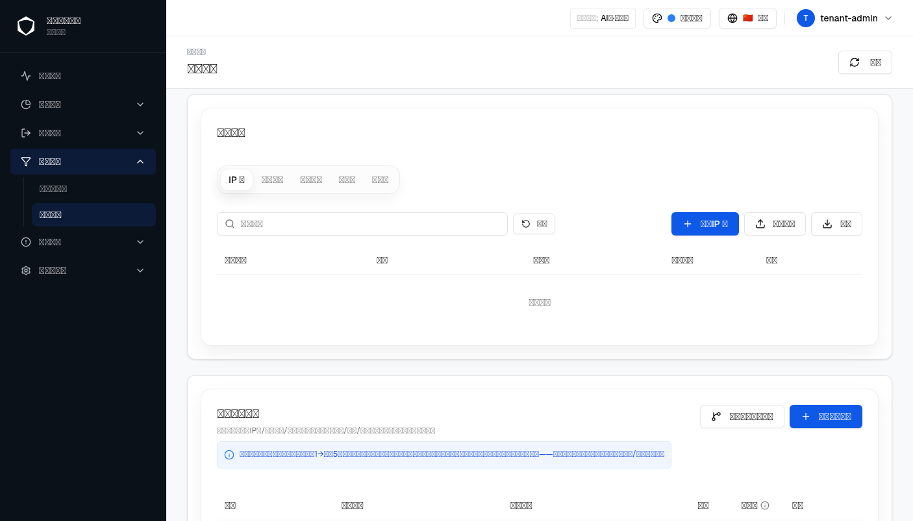
1.3 逐元素说明
| 元素 | 类型 | 变更前 | 变更后 | i18n key | 源码路径 | 形态/角色差异 |
|---|---|---|---|---|---|---|
| 群组管理区工具栏「新建」按钮文案 | 文案（动态） | 新建群组 | 新建{当前Tab类型名}组（5 种值，随 Tab 切换） | groups.newGroupOfType |
group-management-page.tsx renderTab / renderFeatureTab |
[Base] 所有形态/角色一致 |
2. 新建抽屉移除"群组类型"选择器
2.1 方案概述
优化前，新建群组抽屉内包含「群组名称」和「群组类型」两个并排字段，用户需在表单内再次选择类型，与已在 Tab 上做出的类型选择重复决策，且类型切换会改变成员输入区的校验规则和占位符，造成认知负担。
优化后，新建时隐藏「群组类型」Select，抽屉标题直接显示类型（如「新建IP组」），表单内只有「群组名称」（全宽）和「每行一条成员」两个字段，表单职责单一。编辑已有群组时，「群组类型」改为只读 Input 展示，保持信息完整性但不允许修改。
| 场景 | 优化前 | 优化后 |
|---|---|---|
| 新建 | 「群组名称」+「群组类型」Select（可改）+「每行一条成员」 | 「群组名称」全宽 +「每行一条成员」；SheetTitle 为「新建 X 组」 |
| 编辑 | 「群组名称」禁用 +「群组类型」Select 禁用 +「每行一条成员」 | 「群组名称」禁用 +「群组类型」只读 Input +「每行一条成员」 |
修改文件：group-edit-dialog.tsx（移除 Select import，新建路径替换为只读展示，SheetTitle 改用 groups.newGroupOfType）。
2.2 截图式交互预览
状态 S-1：新建IP组抽屉打开态（触发路径：群组管理区 IP 组 Tab → 点击「新建IP组」按钮）
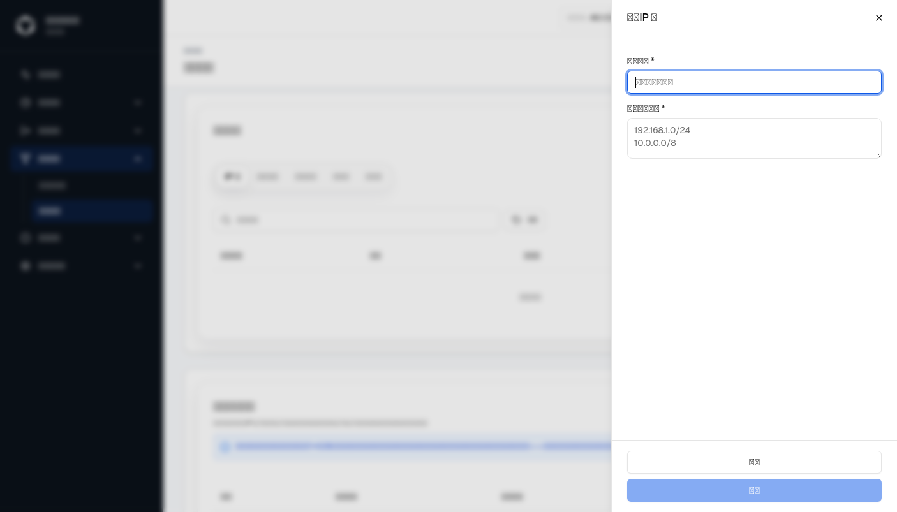
2.3 逐元素说明
| 元素 | 类型 | 变更前 | 变更后 | i18n key | 源码路径 | 形态/角色差异 |
|---|---|---|---|---|---|---|
| SheetTitle | 标题文案 | 新建群组（groups.newGroup） |
新建IP组 / 新建发信人组…（groups.newGroupOfType，typeLabel 随 type 变化） |
groups.newGroupOfType |
group-edit-dialog.tsx SheetTitle |
[Base] |
| 群组类型 Select（新建场景） | 交互控件 | 显示，可选 IP组/发信人组/收信人组/内容组/特征组 | 已移除（不渲染） | — | group-edit-dialog.tsx |
[Base] |
| 群组类型展示（编辑场景） | 只读 Input | 禁用 Select，显示当前类型 | 只读 Input，显示类型文案（如「IP 组」） | groups.ipGroup 等 |
group-edit-dialog.tsx |
[Base] |
| 群组名称输入框（新建场景） | Input | grid-cols-2 左列，宽度约 50% | 全宽（grid 移除，单列布局） | groups.groupName |
group-edit-dialog.tsx |
[Base] |
3. 内容组"每行一条成员"标签改为"每行一条关键词"
3.1 方案概述
内容组的成员是关键词 / 敏感词，使用「成员」一词语义不准确，占位符（敏感词1/敏感词2）与标签（每行一条成员）文案不一致，造成歧义。优化后，仅内容组将标签改为「每行一条关键词」，并将占位符由「敏感词1/敏感词2」改为「关键词1/关键词2」，语义统一；其他类型保持「每行一条成员」不变。
| 字段 | 变更前 | 变更后 | i18n key |
|---|---|---|---|
| 内容组成员区标签 | 每行一条成员 | 每行一条关键词 | groups.contentMemberListPerLine（新增） |
| 内容组成员区占位符 | 敏感词1\n敏感词2 | 关键词1\n关键词2 | groups.contentPlaceholder（已存在，值已修改） |
| 其他类型成员区标签 | 每行一条成员（不变，groups.memberListPerLine） | — | |
3.2 截图式交互预览
状态 S-2：新建内容组抽屉打开态（触发路径：群组管理区 内容组 Tab → 点击「新建内容组」按钮）
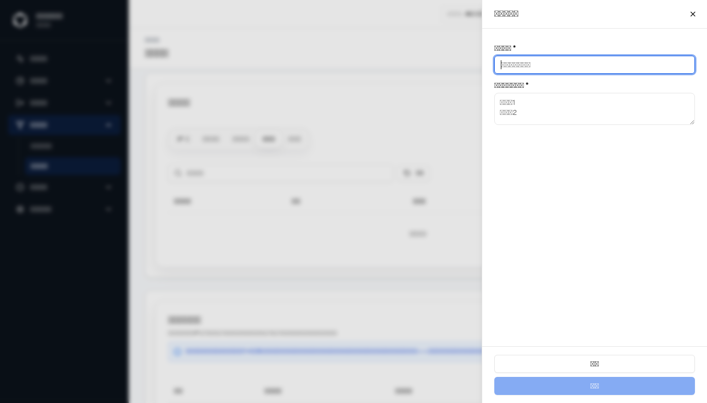
3.3 逐元素说明
| 元素 | 类型 | 变更前 | 变更后 | i18n key | 修改文件 | 形态/角色差异 |
|---|---|---|---|---|---|---|
| 内容组成员区 Label | 标签文案 | 每行一条成员（groups.memberListPerLine） |
每行一条关键词（groups.contentMemberListPerLine） |
groups.contentMemberListPerLine（新增） |
group-edit-dialog.tsx、messages/zh.json、messages/en.json |
[Base] |
| 内容组成员区 Textarea 占位符 | 占位符文案 | 敏感词1\n敏感词2 | 关键词1\n关键词2 | groups.contentPlaceholder |
messages/zh.json |
[Base] |
GT-12719 策略流水线执行动作/黑白名单文案解释
1. 执行动作图例："阻断"改为"拒收"，新增"进行下一步"，移除"标记投递"
1.1 方案概述
策略流水线页面底部图例区「执行动作」行列出流水线中可能出现的所有动作及其说明。本次同步三项变更：
- 重命名：动作名「阻断」→「拒收」，描述「拒绝并退信」保持不变（i18n key
pipeline.actionBlock/pipeline.actionBlockDesc）。 - 新增：「进行下一步 · 继续执行后续策略」条目，位于「标记投递」原位后方，使用
--action-mark-deliver（蓝绿色）圆点，区别于直接投递（绿色），与 DMARC 「进行下一步」语义一致（新增 i18n keypipeline.actionNextStep、pipeline.actionNextStepDesc）。 - 移除：「标记投递」条目——已从流水线执行动作中移除，图例随之去除（
actionLegendItems中删除tagDeliver条目，union type 同步收窄）。
修改文件：PolicyPipelinePage.tsx（actionLegendItems 数组）、messages/zh.json、messages/en.json（pipeline.* 命名空间）。
1.2 截图式交互预览
状态 S-1：策略流水线页面默认态（含图例区）
触发路径：租户管理员 → 安全策略 → 策略流水线 → 默认打开，滚动至页面底部图例区

1.3 逐元素说明
| 元素 | 类型 | 变更前 | 变更后 | i18n key | 源码路径 | 形态/角色差异 |
|---|---|---|---|---|---|---|
| 执行动作「阻断」圆点标签 | 图例标签文案 | 阻断（红色圆点） | 拒收（红色圆点，颜色不变） | pipeline.actionBlock |
PolicyPipelinePage.tsx actionLegendItems |
[Base] |
| 执行动作「阻断」描述 | 图例描述文案 | 拒绝并退信（不变） | 拒绝并退信（不变） | pipeline.actionBlockDesc |
PolicyPipelinePage.tsx |
[Base] |
| 执行动作「进行下一步」条目（新增） | 图例条目 | 不存在 | 进行下一步 · 继续执行后续策略（蓝绿色圆点，位于「标记投递」原位后） | pipeline.actionNextStep / pipeline.actionNextStepDesc（新增） |
PolicyPipelinePage.tsx actionLegendItems[2] |
[Base] |
| 执行动作「标记投递」条目（移除） | 图例条目 | 标记投递 · 投递并标记可疑（蓝绿色圆点） | pipeline.actionTagDeliver / pipeline.actionTagDeliverDesc |
PolicyPipelinePage.tsx（tagDeliver 条目已删除） |
[Base] |
2. 名单类型图例：黑名单描述"阻断→拒收"，白名单描述移除"标记投递"
2.1 方案概述
图例第二行「名单类型」中：
- 黑名单描述：「阻断/隔离/丢弃」→「拒收/隔离/丢弃」（跟随「阻断」→「拒收」重命名，i18n key
pipeline.blacklistTypeDesc）。 - 白名单描述：「投递/标记投递」→「投递」（标记投递已下线，i18n key
pipeline.whitelistTypeDesc）。
2.2 截图式交互预览
状态 S-1（复用）：同上截图，名单类型行位于图例区第二行。
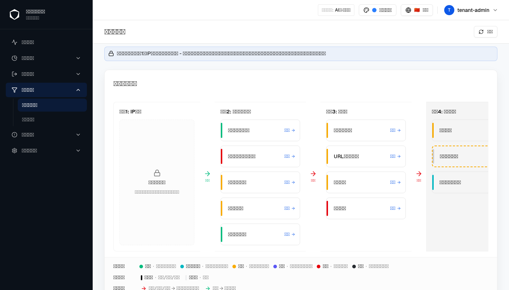
2.3 逐元素说明
| 元素 | 类型 | 变更前 | 变更后 | i18n key | 修改文件 | 形态/角色差异 |
|---|---|---|---|---|---|---|
| 名单类型 黑名单 描述 | 图例文案 | 阻断/隔离/丢弃 | 拒收/隔离/丢弃 | pipeline.blacklistTypeDesc |
messages/zh.json、messages/en.json |
[Base] |
| 名单类型 白名单 描述 | 图例文案 | 投递/标记投递 | 投递 | pipeline.whitelistTypeDesc |
messages/zh.json、messages/en.json |
[Base] |
3. 流程控制图例："阻断/丢弃/隔离→拒收/丢弃/隔离"，流继续描述移除"标记投递"
3.1 方案概述
图例第三行「流程控制」中：
- 终止描述（红色箭头标注）：「阻断/丢弃/隔离 → 终止并退出流水线」→「拒收/丢弃/隔离 → 终止并退出流水线」（i18n key
pipeline.flowTerminateDesc）；flowTerminateShort（箭头旁短文案）同步改为「拒收」。 - 继续描述（绿色箭头标注）：「投递/标记投递 → 继续检测」→「投递 → 继续检测」（i18n key
pipeline.flowContinueDesc）。
3.2 截图式交互预览
状态 S-1（复用）：同上截图，流程控制行位于图例区第三行，流程图中红色箭头旁可见「拒收」短文案。
3.3 逐元素说明
| 元素 | 类型 | 变更前 | 变更后 | i18n key | 修改文件 | 形态/角色差异 |
|---|---|---|---|---|---|---|
| 流程控制 红色箭头 短文案 | 箭头标注文案 | 阻断 | 拒收 | pipeline.flowTerminateShort |
messages/zh.json、messages/en.json |
[Base] |
| 流程控制 终止描述 | 图例文案 | 阻断/丢弃/隔离 → 终止并退出流水线 | 拒收/丢弃/隔离 → 终止并退出流水线 | pipeline.flowTerminateDesc |
messages/zh.json、messages/en.json |
[Base] |
| 流程控制 继续描述 | 图例文案 | 投递/标记投递 → 继续检测 | 投递 → 继续检测 | pipeline.flowContinueDesc |
messages/zh.json、messages/en.json |
[Base] |
GT-12793 邮件标记与声明模块优化
1. 接收标记 / 外发声明规则列表：「取消」「保存」按钮从右上移至右下
1.1 方案概述
新建规则 / 编辑规则抽屉（RuleEditDrawer）中，「取消」「保存」按钮原来位于 SheetHeader 右上角（flex items-center justify-between 内），与标题并排显示。
优化后：按钮区域从 SheetHeader 中移除，改为在 SheetContent 底部新增 <footer class="shrink-0 border-t px-6 py-4">，按钮右对齐（flex justify-end gap-2）。SheetHeader 仅保留标题和副标题，布局更简洁。i18n key mailMarking.cancel、mailMarking.save 和 data-testid="mail-marking-save-rule" 均未改变。
1.2 截图式交互预览
状态 S-1：接收标记规则列表默认态（含规则数据）
触发路径：租户管理员 → 安全策略 → 策略流水线 → 阶段5 邮件标记与声明卡片 → 「接收标记」Tab（默认）
1.3 逐元素说明
| 元素 | 类型 | 变更前 | 变更后 | i18n key / testid | 源码路径 | 形态/角色差异 |
|---|---|---|---|---|---|---|
| SheetHeader 按钮区域 | 布局区域 | flex items-center justify-between，标题+副标题+[取消][保存]并排 |
SheetHeader 仅保留标题和副标题，按钮区域移除 | — | RuleEditDrawer.tsx SheetHeader |
[Base] |
| 底部 footer 按钮区域（新增） | 布局区域 | 不存在 | <footer class="shrink-0 border-t px-6 py-4">，右对齐，位于表单内容下方、SheetContent 底部 |
— | RuleEditDrawer.tsx footer |
[Base] |
| 取消按钮 | Button（outline） | SheetHeader 右上角 | footer 右下角（位置变更，行为不变） | mailMarking.cancel |
RuleEditDrawer.tsx |
[Base] |
| 保存按钮 | Button（primary） | SheetHeader 右上角 | footer 右下角（位置变更，行为不变；Loader2 loading 态保留） | mailMarking.save / data-testid="mail-marking-save-rule" |
RuleEditDrawer.tsx |
[Base] |
2. 规则列表补齐「优先级」字段（Promise.allSettled 容错）
2.1 方案概述
规则列表中「优先级」列的表头和数据行（RuleListTable.tsx）在代码层面已存在，但因 MailMarkingPage.loadRules() 使用 Promise.all：当 listMailMarkingScopes（获取适用对象列表）请求失败时，整体抛出异常，进入 catch 后 setRules 不被调用，规则列表永远为空数组 []，导致 priority 列虽存在于表头但无数据行可显示。
修复方案：将 Promise.all 改为 Promise.allSettled，规则请求和 scopes 请求独立容错——规则请求失败才 toast 报错并 setRules([])；scopes 请求失败时静默降级为空列表（不影响规则行显示）。同时修复 zh.json 中 mailMarking 命名空间的 4 处 UTF-8 乱码（priorityHint、noData、markPosition、sampleSubject）。
2.2 截图式交互预览
状态 S-1（同上）：接收标记规则列表，scopes 加载无论成功与否，规则行均正常显示（含 priority 数值）。
状态 S-2：外发声明规则列表
触发路径：同 S-1 → 点击「外发声明」Tab
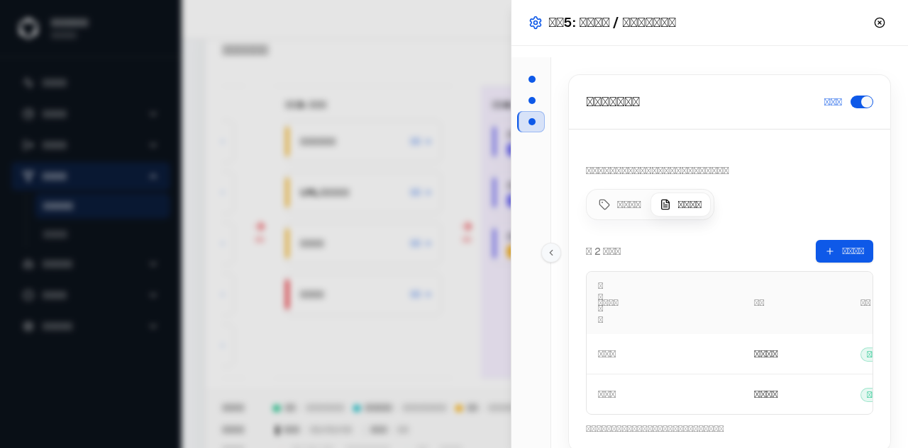
2.3 逐元素说明
| 元素 | 类型 | 变更前 | 变更后 | i18n key / 源码 | 形态/角色差异 |
|---|---|---|---|---|---|
loadRules 错误处理 |
异步逻辑 | Promise.all：scopes 失败 → 整体 catch → rules 永远为空 |
Promise.allSettled：rules / scopes 独立容错，rules 加载成功即展示 |
MailMarkingPage.tsx |
[Base] |
| zh.json 乱码修复 | i18n 文案 | priorityHint「…规??」、noData「???无规则」、markPosition「??记位置」、sampleSubject「项???进展说明」 |
全部修复为正确 UTF-8 汉字：「…规则」「暂无规则」「标记位置」「项目进展说明」 | messages/zh.json mailMarking.* |
[Base] |
3. 「优先级」列位置调整至「状态」之后
3.1 方案概述
原表头列序为：优先级 | 规则名称 | 适用对象 | 位置 | 状态 | 操作。按需求调整为：规则名称 | 适用对象 | 位置 | 状态 | 优先级 | 操作（优先级列移至状态之后、操作之前）。
修改范围：RuleListTable.tsx 的 <thead> 中 priority <th> 和 <tbody> 中 priority <td> 同步调整，列宽 w-[92px] 保持不变，colSpan={6} 的空行/加载行列数不变。
3.2 截图式交互预览
状态 S-1（接收标记列顺序）：表头列序为「规则名称 | 适用对象 | 位置 | 状态 | 优先级 | 操作」，优先级值（4/3/2/1）位于状态徽章右侧。
3.3 逐元素说明
| 元素 | 类型 | 变更前列序 | 变更后列序 | 源码路径 | 形态/角色差异 |
|---|---|---|---|---|---|
| 规则列表表头 | 表格 thead | 优先级 / 规则名称 / 适用对象 / 位置 / 状态 / 操作 | 规则名称 / 适用对象 / 位置 / 状态 / 优先级 / 操作 | RuleListTable.tsx thead tr |
[Base]，接收标记与外发声明共用同一组件 |
| 规则列表数据行 priority 单元格 | 表格 tbody td | 第1列（font-mono tabular-nums） |
第5列（状态 Badge 之后，操作之前） | RuleListTable.tsx tbody tr |
[Base] |
| 优先级提示文案（表格底部） | 说明文案 | 不变（「数值越大优先级越高，命中多条规则时优先执行数值大的规则」） | 不变 | mailMarking.priorityHint（乱码已修复） |
[Base] |
GT-12795 邮件标记与声明：创建规则优先级问题处理
1. 新建规则优先级默认值与范围修正（1 → 100，范围 100~1000）
1.1 方案概述
问题：新建接收标记规则 / 外发声明规则时，优先级字段默认值为 1，后端接口要求租户管理员的优先级必须在 100~1000 范围内，导致提交时出现报错「tenant admin priority must be between 100 and 1000」。
修复方案：
MailMarkingPage.tsx—nextPriority计算逻辑：无规则时默认返回100；有规则时取现有最大优先级 +1，并使用Math.max(..., 100)钳制下限、Math.min(..., 1000)钳制上限，确保默认值始终在合法区间。RuleEditDrawer.tsx— Input 属性：min从1改为100，新增max={1000}，输入框宽度从w-20调整为w-24（容纳4位数字）。RuleEditDrawer.tsx—validate函数：校验条件从priority < 1改为priority < 100 || priority > 1000，使用新 i18n keyerrorPriorityRange。zh.json/en.json：mailMarking.priorityTip更新为「取值范围 100～1000；数值越大，规则越优先执行」；新增mailMarking.errorPriorityRange「优先级必须为 100 到 1000 之间的整数」。
1.2 截图式交互预览
状态 S-1：新建接收标记规则抽屉默认态
触发路径：租户管理员 → 安全策略 → 策略流水线 → 阶段5 邮件标记与声明 → 接收标记 Tab → 点击「+ 新建规则」按钮
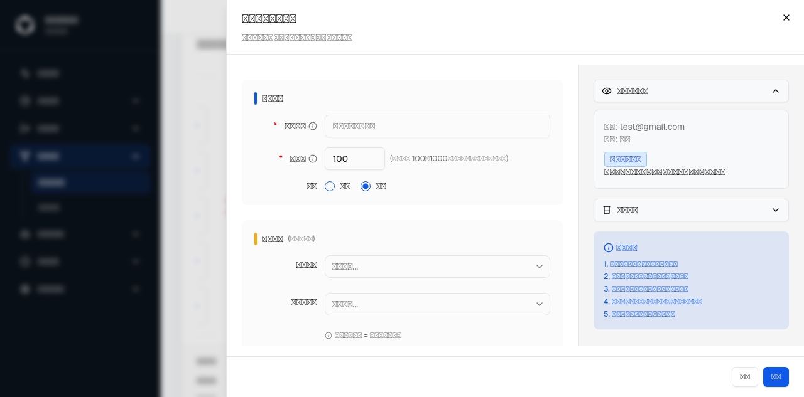
| 可见元素 | 内容 / 值 | 说明 |
|---|---|---|
| 优先级输入框 | 默认值 100，type=number，min=100，max=1000 | 原默认值为 1，已修正 |
| 优先级提示文案 | 「取值范围 100～1000；数值越大，规则越优先执行」 | i18n key mailMarking.priorityTip，原文案「必须为正整数；数值越大，规则越优先执行」 |
| 「保存」按钮 | 底部 footer 右侧，data-testid="mail-marking-save-rule" | 位置：SheetContent 底部 footer（GT-12793 变更1 已将按钮从标题区移至此处） |
状态 S-2：规则名称为空时点击保存的校验失败态
触发路径：S-1 → 不填写规则名称 → 直接点击「保存」
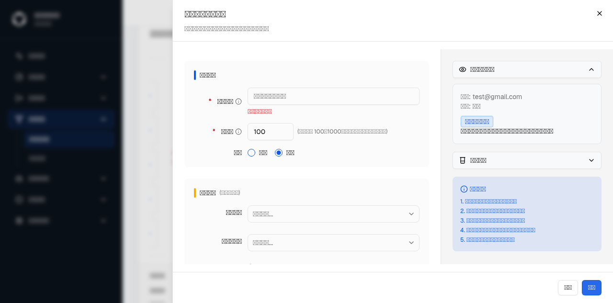
errorPriorityRange 错误文案| 校验条件 | 错误文案 | i18n key | 触发时机 |
|---|---|---|---|
| 优先级不在 100~1000 范围内（含非整数） | 「优先级必须为 100 到 1000 之间的整数」 | mailMarking.errorPriorityRange（新增） | 点击「保存」时前端校验 |
| 规则名称为空 | 「规则名称不能为空」（原有校验，未变更） | mailMarking.errorNameRequired | 点击「保存」时前端校验 |
1.3 逐元素说明
| 元素 | 类型 | 变更前 | 变更后 | i18n key / testid | 源码路径 | 形态/角色差异 |
|---|---|---|---|---|---|---|
| 优先级输入框默认值 | Input[type=number] | nextPriority = Math.max(0,...rules.map(r=>r.priority)) + 1，无规则时返回 1 |
nextPriority：无规则时返回 100；有规则时 Math.min(Math.max(max+1, 100), 1000) |
data-testid="mail-marking-priority" |
MailMarkingPage.tsx useMemo nextPriority |
[Base] |
| 优先级输入框 min/max 属性 | Input[type=number] | min={1}，无 max |
min={100} max={1000} |
— | RuleEditDrawer.tsx Input priority |
[Base] |
| 优先级输入框宽度 | CSS class | w-20（80px，容纳3位数字） |
w-24（96px，容纳4位数字） |
— | RuleEditDrawer.tsx Input priority |
[Base] |
| 优先级提示文案 | 行内提示文本 | 「必须为正整数；数值越大，规则越优先执行」 | 「取值范围 100～1000；数值越大，规则越优先执行」 | mailMarking.priorityTip |
messages/zh.json、messages/en.json |
[Base] |
| 优先级校验函数 | validate 逻辑 | priority < 1 → errorPriorityPositive |
priority < 100 || priority > 1000 → errorPriorityRange |
mailMarking.errorPriorityRange（新增） |
RuleEditDrawer.tsx validate() |
[Base]，租户管理员范围 100~1000（后端约束） |
| 错误文案（新增 key） | i18n 字符串 | 不存在 | zh：「优先级必须为 100 到 1000 之间的整数」 en：「Priority must be an integer between 100 and 1000」 |
mailMarking.errorPriorityRange |
messages/zh.json、messages/en.json |
[Base] |
GT-12828 策略：优先级统一
1. 方案A：邮件标记模块接入 getRulePriorityRange，消除硬编码
1.1 方案概述
背景：GT-12795 修复邮件标记优先级默认值时，将 100/1000 直接写入组件，未接入项目已有的 getRulePriorityRange(isSystemAdmin) 公共工具，导致系统管理员登录时仍被错误限制在租户范围。
修复内容：
MailMarkingPage.tsx：引入useAuth()和getRulePriorityRange，以isSystemAdmin计算priorityRange（租户管理员 100–1000，系统管理员 0–9999），传入RuleEditDrawer；nextPriority、priorityHint均改用priorityRange.min/max/defaultValue，不再硬编码。RuleEditDrawer.tsx：新增priorityRange?: PriorityRangeprop（有FALLBACK_PRIORITY_RANGE兜底）；Input 的min/max、提示文案priorityTip、validate校验均改为从range读取；新增mailMarking.errors.priorityRange参数化 i18n key。- i18n：
mailMarking.priorityTip和mailMarking.priorityHint改为参数化{min}/{max}；新增mailMarking.errors.priorityRange（与advancedRulesFeature.errors.priorityRange对齐）；mailMarking.errorPriorityRange同步参数化（向后兼容）。
1.2 截图式交互预览
状态 S-1：新建接收标记规则抽屉默认态（租户管理员）
触发路径：租户管理员 → 安全策略 → 策略流水线 → 阶段5 邮件标记与声明 → 接收标记 Tab → 点击「+ 新建规则」按钮
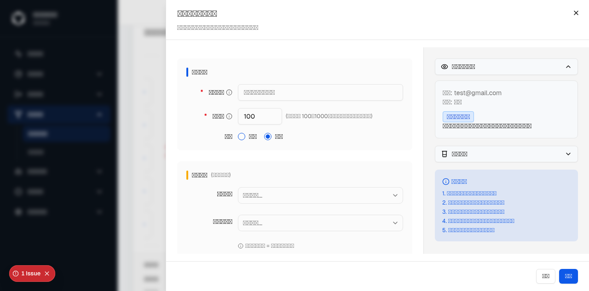
value=100, min=100, max=1000（租户管理员）| 可见元素 | 内容/值 | 说明 |
|---|---|---|
| 优先级输入框 | 默认值 100，min=100，max=1000（租户管理员）；0–9999（系统管理员） | 由 getRulePriorityRange(isSystemAdmin) 动态决定 |
| 优先级提示文案 | 「（取值范围 {min}～{max}；数值越大，规则越优先执行）」参数化渲染 | i18n key mailMarking.priorityTip，从 {min}/{max} 参数注入实际值 |
| 底部 footer | 「取消」「保存」按钮 | GT-12793 变更1 已定义位置；本次未改动 |
1.3 逐元素说明
| 元素 | 类型 | 变更前 | 变更后 | i18n key / 源码 | 形态/角色差异 |
|---|---|---|---|---|---|
| nextPriority 默认值计算 | useMemo | 无规则→100，有规则→Math.min(Math.max(max+1,100),1000)（硬编码） | 无规则→range.defaultValue，有规则→Math.min(Math.max(max+1,range.min),range.max) | MailMarkingPage.tsx | [Overlay] 租户管理员 defaultValue=600，系统管理员 defaultValue=600（range.min=0） |
| priorityRange prop | RuleEditDrawer prop | 不存在 | 新增 priorityRange?: PriorityRange，有 FALLBACK_PRIORITY_RANGE（租户默认）兜底 | RuleEditDrawer.tsx | [Base] |
| Input min/max | HTML 属性 | min={100} max={1000} 硬编码 | min={range.min} max={range.max} | RuleEditDrawer.tsx | [Overlay] 租户 100/1000，系统管理员 0/9999 |
| validate 函数签名 | 函数参数 | validate(form, t)，校验 <100 || >1000 | validate(form, t, range)，校验 !isPriorityInRange(priority, range) | RuleEditDrawer.tsx | [Overlay] |
| priorityTip 提示文案 | i18n 字符串 | '取值范围 100～1000；数值越大，规则越优先执行'（硬编码数字） | '取值范围 {min}～{max}；数值越大，规则越优先执行' | mailMarking.priorityTip | [Base] |
| priorityHint 列表提示 | i18n 字符串 | '数值越大优先级越高，命中多条规则时优先执行数值大的规则'（无范围） | '数值越大优先级越高，命中多条规则时优先执行数值大的规则（范围 {min}–{max}）' | mailMarking.priorityHint | [Base] |
| errors.priorityRange（新增） | i18n 字符串 | 不存在 | zh：'优先级需在 {min}–{max} 之间'；en：'Priority must be between {min} and {max}' | mailMarking.errors.priorityRange | [Base] |
2. 方案B：内容规则、IP 过滤、IP 频率补齐角色感知范围校验
2.1 方案概述
问题：内容规则 Input 硬编码 min={1}、提示文案写死「范围1-9999」；IP 过滤 schema z.number().int().nonnegative()（无上限）；IP 频率 schema z.number()（无任何范围约束）。三个模块均不感知角色，租户管理员应受 100–1000 限制的约束未被前端校验拦截。
统一修复方案：三个模块均按行为管控的标准模式改造：
- 工厂函数模式：将模块级常量
ruleSchema重构为createRuleSchema(range: PriorityRange)工厂函数，组件内通过useMemo(() => getRulePriorityRange(isSystemAdmin), [isSystemAdmin])获取 range，再用useMemo(() => createRuleSchema(range), [range])生成动态 schema 传给zodResolver。 - 内容规则（
ContentRuleDrawer.tsx）：组件内直接useAuth()，validate改用range.min/max，Inputmin/max参数化，priorityRangeHint和priorityInvalid均加{min}/{max}插值。 - IP 过滤（
IPFilterPage.tsx）：createRuleSchema中 priority 从nonnegative()改为.min(range.min, 'priorityOutOfRange').max(range.max, 'priorityOutOfRange')；handleOpenDialog新建默认值改为Math.min(Math.max(prev+1, range.min), range.max)；Input 加max={range.max}，min={range.min}；新增 priority inline 错误渲染；新增 i18nipFilter.priorityOutOfRange。 - IP 频率（
IPFrequencyPage.tsx）：同上工厂函数模式；defaultForm从模块级常量改为makeDefaultForm(range.defaultValue)工厂函数，组件内用useMemo；新增 priority inline 错误渲染；新增 i18nipFrequency.priorityOutOfRange。 - i18n 提示文案：
ipFilter.priorityTip/priorityHint、ipFrequency.priorityTip/priorityDesc均加入{min}/{max}插值，让渲染文案随角色动态变化。
2.2 截图式交互预览
状态 S-1：内容规则新建抽屉默认态（租户管理员）
触发路径：租户管理员 → 安全策略 → 策略流水线 → 阶段3 内容层/内容规则 → 点击「配置」→ 点击「新建规则」按钮
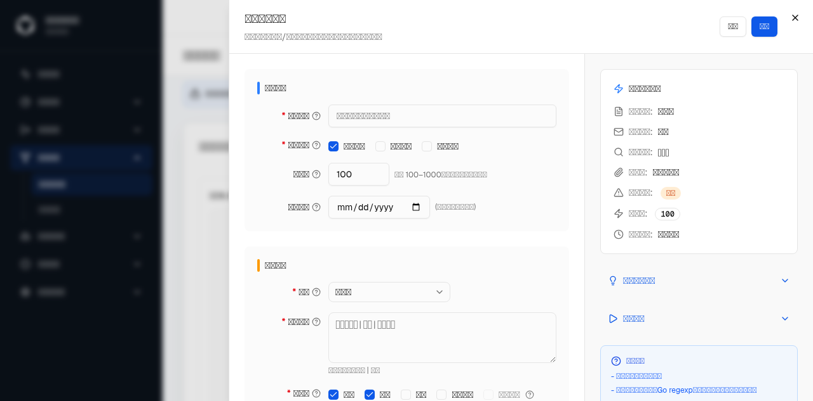
value=100, min=100, max=1000（租户管理员）。原「范围1-9999」已修正。| 可见元素 | 内容/值 | 说明 |
|---|---|---|
| 优先级输入框 | 默认值 100，min=100，max=1000（租户管理员）；0–9999（系统管理员） | 原为 min=1，max=9999，无角色区分 |
| 优先级提示文案 | 「范围 {min}–{max}，数值越大优先级越高」参数化渲染 | i18n key contentRules.priorityRangeHint，原「范围1-9999，数值越大优先级越高」 |
| 右侧预览面板：优先级 | 显示当前输入值 100 | 实时同步 |
状态 S-2：IP 过滤 / IP 频率（AI版·多租户·租户管理员）
触发路径：租户管理员 → 安全策略 → IP 过滤（或 IP 频率限制）→ 点击「新建规则」
无法验证：AI版·多租户模式下租户管理员访问 /zh/security/ip-filter 和 /zh/security/ip-frequency 返回「未授权」，Mock 环境不提供该权限组合。代码层已通过 TypeScript 编译验证（无新增 TS 错误）；IP 过滤 DOM 属性变化（min: nonnegative → 100, max: 无 → 1000）已在源码层确认。
2.3 逐元素说明
| 模块 | 元素 | 变更前 | 变更后 | i18n key / 源码 | 形态/角色差异 |
|---|---|---|---|---|---|
| 内容规则 | Input min/max | min={1} max={9999}（硬编码，无角色区分） | min={range.min} max={range.max} | ContentRuleDrawer.tsx | [Overlay] 租户 100/1000，系统管理员 0/9999 |
| 内容规则 | priorityRangeHint | '范围1-9999，数值越大优先级越高'（硬编码） | '范围 {min}–{max}，数值越大优先级越高' | contentRules.priorityRangeHint | [Base] |
| 内容规则 | priorityInvalid 错误文案 | '优先级必须是 {min} 到 {max} 的整数'（已参数化，措辞不一致） | '优先级需在 {min}–{max} 之间'（与其他模块统一措辞） | contentRules.priorityInvalid | [Base] |
| IP 过滤 | ruleSchema priority | z.number().int().nonnegative()（无上限） | z.number().int().min(range.min,'priorityOutOfRange').max(range.max,'priorityOutOfRange') | IPFilterPage.tsx createRuleSchema | [Overlay] |
| IP 过滤 | Input min/max | min={0}，无 max | min={range.min} max={range.max} | IPFilterPage.tsx | [Overlay] |
| IP 过滤 | 新建默认值 | (items[0]?.priority ?? 99) + 1（无 range 钳制） | Math.min(Math.max(prev+1, range.min), range.max) | IPFilterPage.tsx handleOpenDialog | [Overlay] |
| IP 过滤 | priorityHint/priorityTip | 「数值越大越优先」（无范围） | 「范围 {min}–{max}，数值越大越优先」/ 「数值越大越优先，范围 {min}–{max}...」 | ipFilter.priorityHint / ipFilter.priorityTip | [Base] |
| IP 过滤 | priorityOutOfRange（新增） | 不存在 | zh：'优先级需在 {min}–{max} 之间'；en：'Priority must be between {min} and {max}' | ipFilter.priorityOutOfRange | [Base] |
| IP 频率 | ruleSchema priority | z.number()（无任何约束） | z.number().int().min(range.min,'ipFrequency.priorityOutOfRange').max(range.max,'...') | IPFrequencyPage.tsx createRuleSchema | [Overlay] |
| IP 频率 | defaultForm priority | 模块级常量 priority: 100（硬编码） | makeDefaultForm(range.defaultValue) 工厂函数，组件内 useMemo | IPFrequencyPage.tsx | [Overlay] 租户 defaultValue=600 |
| IP 频率 | Input min/max | min={0}，无 max | min={range.min} max={range.max} | IPFrequencyPage.tsx | [Overlay] |
| IP 频率 | priority inline 错误渲染（新增） | 无 inline 错误，仅 toast | Input 下方新增 <p class="text-xs text-red-500"> 错误行，与其他字段一致 | IPFrequencyPage.tsx | [Base] |
| IP 频率 | priorityDesc/priorityTip | 「数值越大越先匹配」/「数值越大优先级越高」（无范围） | 「范围 {min}–{max}，数值越大越先匹配」/「数值越大优先级越高，范围 {min}–{max}」 | ipFrequency.priorityDesc / ipFrequency.priorityTip | [Base] |
| IP 频率 | priorityOutOfRange（新增） | 不存在 | zh：'优先级需在 {min}–{max} 之间'；en：'Priority must be between {min} and {max}' | ipFrequency.priorityOutOfRange | [Base] |
3. 方案C：统一各模块 priority 错误文案与行内提示文案
3.1 方案概述
问题：项目中 6 个策略模块各自定义了语义相同的优先级相关文案，但措辞、分隔符、有无范围信息均不一致：错误文案混用「须在」/「范围应为」/「必须是…的整数」；行内提示有的只有裸数字范围、有的没有范围、有的有范围但用 -（连字符）而非 –（en dash）。
统一规范（以 advancedRulesFeature 为基准）：
- 错误文案：统一为「优先级需在 {min}–{max} 之间」（en dash，无句号）
- 行内提示：统一为「范围 {min}–{max}，数值越大优先级越高」
- tooltip：统一为「数值越大越优先，范围 {min}–{max}」
- 零代码改动：仅修改
messages/zh.json和messages/en.json，共 5 处 zh + 5 处 en。
3.2 逐 key 说明
| 命名空间.key | 变更前（zh） | 变更后（zh） | 类别 |
|---|---|---|---|
senderFilter.errors.priorityRange | 「优先级须在 {min}-{max} 之间」（连字符 -，「须」） | 「优先级需在 {min}–{max} 之间」（en dash，「需」） | 错误文案 |
contentRules.priorityInvalid | 「优先级必须是 {min} 到 {max} 的整数」 | 「优先级需在 {min}–{max} 之间」 | 错误文案 |
behaviorControl.errors.priorityRange | 「优先级范围应为 {min}-{max}」 | 「优先级需在 {min}–{max} 之间」 | 错误文案 |
behaviorControl.form.priorityHint | 「{min}-{max}」（裸数字，无说明） | 「范围 {min}–{max}，数值越大优先级越高」 | 行内提示 |
behaviorControl.form.priorityTooltip | 「数值越大越优先，范围 {min}-{max}」（连字符） | 「数值越大越优先，范围 {min}–{max}」（en dash） | tooltip |
en.json 同步更新对应 key，措辞与中文版语义一致。advancedRulesFeature.errors.priorityRange、mailMarking.errors.priorityRange 已是标准格式，本次未改动。
GT-12791 相似检测模块优化
1. 触发动作调整：5 个标准动作 + 改名统一
1.1 方案概述
背景：原触发动作有 5 个（标记投递、隔离、审核、阻断、丢弃），其中「标记投递」语义模糊（执行动作与附加策略混为一体），「阻断」与系统其他模块的「拒收」语义不一致。
决策过程：讨论中考虑了「新增纯投递动作」和「改名为投递」两个方案，最终定为「进行下一步」：① 「投递」容易被理解为"最终送达收件箱"，但该动作实际语义是"这一阶段不拦截、继续走检测流水线后续阶段"，用"投递"存在歧义；② 系统已有观察模式供测试/调试使用，无需额外新增动作。
与 GT-12719（策略流水线模块）术语的关系：策略流水线模块（PolicyPipelinePage.tsx）已存在一个语义相近的图例条目「进行下一步 · 继续执行后续策略」（pipeline.actionNextStep，蓝绿色圆点，DMARC 场景下"继续执行后续策略"）。本次相似检测模块沿用同一中文措辞——两者本质都是"不拦截，继续走后续流程/阶段"，用同一个词对管理员而言学习成本更低；但两者是完全独立的 i18n key（similarDetection.actionMarkDelivery vs pipeline.actionNextStep），互不影响，各自模块内部语义自洽。
最终方案：
mark-deliveryvalue 不变，i18n label 从「标记投递」改为「进行下一步」（en:Mark & Deliver→Next Step）blockvalue 不变，i18n label 从「阻断」改为「拒收」（en:Block→Reject）- 最终 5 个动作：进行下一步 / 隔离 / 审核 / 拒收 / 丢弃（顺序不变，
action-options.ts不修改） errorTagRequired错误文案去除对具体动作名的引用，改为「启用该动作时需至少启用一种标记方式」（en:At least one tag mode is required when this action is enabled），避免以后动作名再变还要同步改错误文案
1.2 截图式交互预览
状态 S-1：触发动作下拉展开（发送方向，5 个选项）
触发路径：租户管理员 → 安全策略 → 相似邮件与主题检测 → 发送方向触发动作下拉 → 点击展开
注：本状态截图摄制于改名为「投递」阶段，实际界面文案以「进行下一步」为准，选项顺序与位置不变。
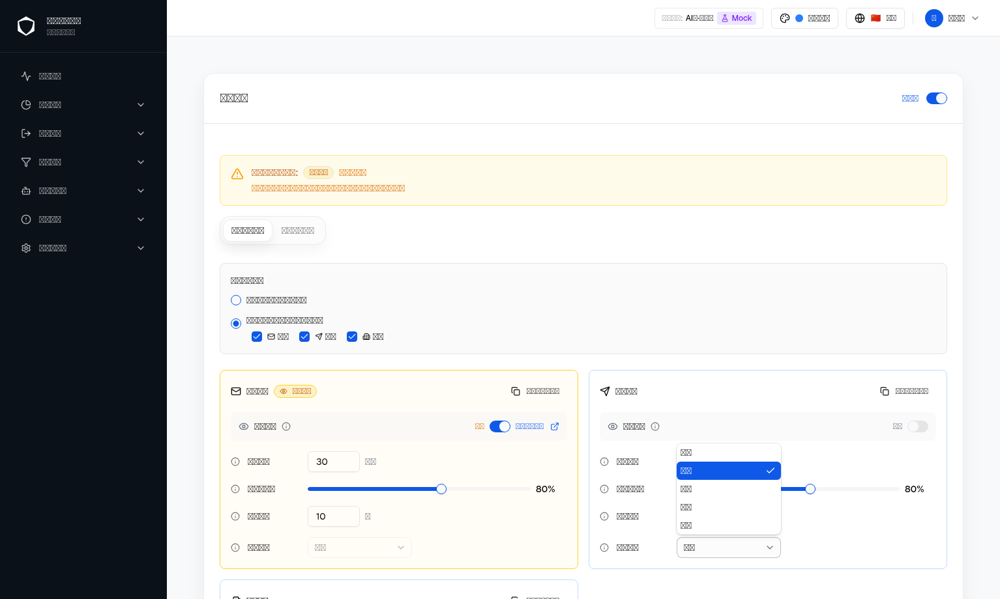
| 选项 | value | 变更前 label | 变更后 label | 说明 |
|---|---|---|---|---|
| 进行下一步 | mark-delivery | 标记投递 | 进行下一步 | value 不变；附加标记策略仍附属于此动作 |
| 隔离 | quarantine | 隔离 | 隔离 | 未变更 |
| 审核 | review | 审核 | 审核 | 未变更 |
| 拒收 | block | 阻断 | 拒收 | value 不变；与其他模块术语统一 |
| 丢弃 | discard | 丢弃 | 丢弃 | 未变更 |
1.3 逐元素说明
| 元素 | 类型 | 变更前 | 变更后 | i18n key | 形态/角色差异 |
|---|---|---|---|---|---|
| 触发动作「进行下一步」选项 label | Select option | 「标记投递」 | 「进行下一步」 | similarDetection.actionMarkDelivery | [Base] |
| 触发动作「拒收」选项 label | Select option | 「阻断」 | 「拒收」 | similarDetection.actionBlock | [Base] |
| 标记方式区域 hint 文案 | 说明文字 | 「至少选择一种标记方式，可同时启用主题标记与信头标记」 | 「至少选择一种标记方式，可同时启用主题标记、信头标记与正文标记」 | similarDetection.tagModeHint | [Base] |
| 保存校验错误文案（未选任何标记） | toast 错误 | 「标记投递需至少启用一种标记方式」 | 「启用该动作时需至少启用一种标记方式」 | similarDetection.errorTagRequired | [Base] |
2. 附加策略：进行下一步动作下新增「正文标记」Switch + 自由文本 Input
2.1 方案概述
背景：原「标记方式」面板仅支持主题标记和信头标记两种位置，用户无法在邮件正文中插入标记文本。
最终方案：在信头标记行下方对称追加第三行「正文标记」Switch；Switch 开启后，其下展示一个自由文本 Input（格式由后端处理，前端不限制）。字段：tag_body_enabled: boolean / tag_body_content: string，新增到 SimilarDetectionConfig type 中。
附加策略语义说明：「进行下一步」动作（value=mark-delivery）本身就是「不拦截、继续走流程 + 可选标记」——标记是附加策略，三个位置均可选，均不选等同于静默放行（此场景建议使用观察模式代替）。
2.2 截图式交互预览
状态 S-2：进行下一步动作选中，标记方式面板默认态（仅主题标记开启）
触发路径：发送方向触发动作 → 选择「进行下一步」→ 标记方式面板展开，主题标记默认开启
注：本状态截图摄制于改名为「投递」阶段，实际界面文案以「进行下一步」为准，面板结构和交互不变。
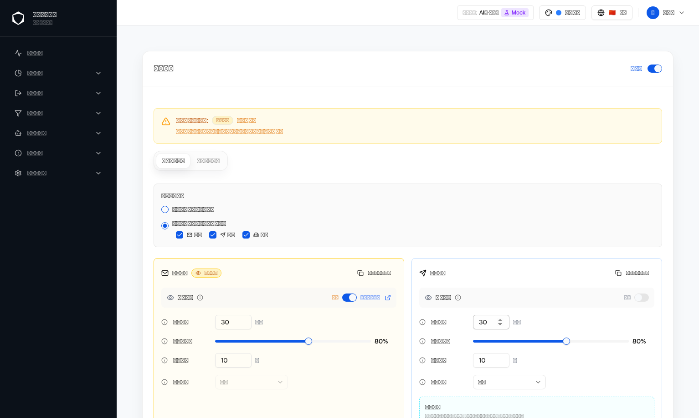
状态 S-3：进行下一步动作 + 标记面板完整视图（含按钮区靠右）
触发路径：页面滚动至底部，可见标记方式面板三行 Switch + 底部按钮区
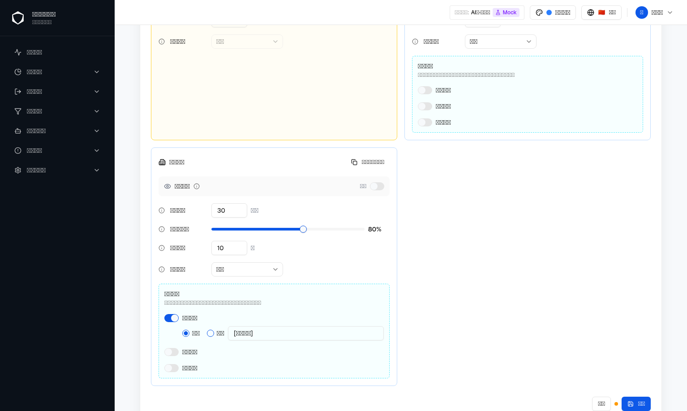
justify-end 布局，两按钮紧靠右端。| 可见元素 | 内容/值 | 说明 |
|---|---|---|
| 标记方式面板标题 | 「标记方式」 | 仅在触发动作为「进行下一步」（mark-delivery）时显示 |
| 标记方式面板提示文案 | 「至少选择一种标记方式，可同时启用主题标记、信头标记与正文标记」 | tagModeHint |
| 主题标记 Switch | 开启（默认）；下方：前缀/后缀 Radio + 内容 Input | tag_subject_enabled |
| 信头标记 Switch | 关闭（默认）；开启后显示字段名 + 字段值两个 Input | tag_header_enabled |
| 正文标记 Switch（新增） | 关闭（默认）；开启后显示自由文本 Input（placeholder「如：[相似邮件]」） | tag_body_enabled（新增字段） |
| 正文内容 Input（新增） | 仅在 tag_body_enabled=true 时显示；自由文本，无格式限制 | tag_body_content（新增字段）；data-testid="similar-detection-tag-body-content" |
2.3 逐元素说明
| 元素 | 类型 | 变更前 | 变更后 | i18n key / 源码 | 形态/角色差异 |
|---|---|---|---|---|---|
| 正文标记 Switch（新增） | Switch | 不存在 | 信头标记行下方对称追加；data-testid="similar-detection-tag-body-switch" | similarDetection.tagBodyLabel | [Base] |
| 正文标记内容 Input（新增） | Input | 不存在 | Switch 开启后展示，pl-10 与其他字段行对齐；data-testid="similar-detection-tag-body-content" | similarDetection.tagBodyPlaceholder（zh：「如：[相似邮件]」；en：「e.g., [Similar Mail]」） | [Base] |
| types.ts 新增字段 | TypeScript 类型 | 无 tag_body_* | tag_body_enabled?: boolean、tag_body_content?: string（追加到 SimilarDetectionConfig） | src/components/security/similar-detection/types.ts | [Base] |
3. 校验逻辑优化 + 豁免提示条移除 + 按钮区靠右对齐
3.1 方案概述
校验错误文案拆分：原校验逻辑中，「未选任何标记方式」和「已选但字段为空」三种情形（主题内容为空、信头字段为空、正文内容为空）均触发同一错误 key errorTagRequired，错误文案为「标记投递需至少启用一种标记方式」，误导用户（字段已填仍提示「需至少启用一种」）。拆分为：
errorTagRequired：仅当三个 Switch 全部关闭时触发，文案改为「启用该动作时需至少启用一种标记方式」（去除对具体动作名的引用，避免动作改名时需要同步改错误文案）errorTagFieldRequired（新增）：当某个 Switch 开启但对应字段为空时触发，文案「已启用的标记方式内容不能为空」
豁免提示条移除：原页面底部有一条蓝色信息提示「豁免名单统一由群组策略模块配置，本模块不再提供免检测发信人管理入口 / 前往群组策略配置」，两处调用（相似邮件 Tab、主题检测 Tab）均已移除，连带清理 renderExemptionNote 函数体及 Link、ExternalLink 两个孤立 import。
按钮区靠右对齐：原底部按钮区 justify-between（取消靠左、保存靠右，在宽屏下两端相距约 900px），改为 justify-end，与系统其他弹窗 footer 保持一致。
3.2 截图式交互预览
状态 S-4：校验错误 toast — 已启用标记但内容为空
触发路径：发送方向选「进行下一步」→ 开启信头标记但不填字段名/字段值 → 点击「保存」
注：本状态截图摄制于改名为「投递」阶段，实际界面文案以「进行下一步」为准，校验逻辑与错误文案不受影响。
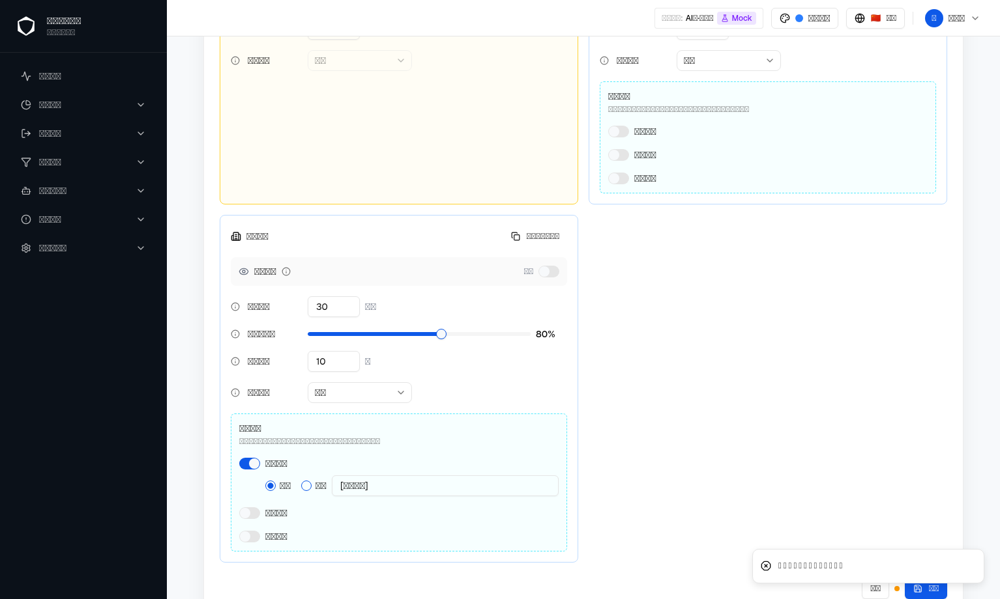
errorTagFieldRequired）— 右下角红色 X 图标 + 文案「已启用的标记方式内容不能为空」。底部按钮区同时可见：取消和保存均靠右排列（justify-end）。| 触发条件 | 错误 key | 文案（zh） | 文案（en） |
|---|---|---|---|
| 三个 Switch 全部关闭，点击保存 | errorTagRequired | 「启用该动作时需至少启用一种标记方式」 | At least one tag mode is required when this action is enabled |
| 主题标记开启但内容为空 | errorTagFieldRequired | 「已启用的标记方式内容不能为空」 | Enabled tag modes cannot have empty content |
| 信头标记开启但字段名或字段值为空 | errorTagFieldRequired | 「已启用的标记方式内容不能为空」 | Enabled tag modes cannot have empty content |
| 正文标记开启但内容为空 | errorTagFieldRequired | 「已启用的标记方式内容不能为空」 | Enabled tag modes cannot have empty content |
3.3 逐元素说明
| 元素 | 变更前 | 变更后 | 源码位置 | 形态/角色差异 |
|---|---|---|---|---|
| 豁免提示条（蓝色信息条） | 两个 Tab 底部各渲染一次（renderExemptionNote()）；含「前往群组策略配置」链接 | 已完全移除，renderExemptionNote 函数、Link import、ExternalLink import 全部删除 | SimilarDetectionPage.tsx | [Base] |
| 底部按钮区布局 | justify-between（取消靠左，保存靠右，宽屏约 900px 间距） | justify-end（取消/保存紧靠右侧排列）；内层 ml-auto div 移除 | SimilarDetectionPage.tsx 底部 footer | [Base] |
| 校验逻辑（mark-delivery 动作） | 「未选」/「已选但空」均用 t('errorTagRequired') | 「未选」→ t('errorTagRequired')（文案已去除动作名引用）；「已选但空」→ t('errorTagFieldRequired') | SimilarDetectionPage.tsx 第 157–160 行 | [Base] |
errorTagFieldRequired（新增 i18n key） | 不存在 | zh：「已启用的标记方式内容不能为空」；en：「Enabled tag modes cannot have empty content」 | messages/zh.json / messages/en.json（similarDetection.errorTagFieldRequired） | [Base] |
GT-12790 相似邮件与主题检测：交互优化
1. 全方向聚合卡片观察模式配色对齐：与按方向独立检测卡片一致的黄色标签卡
1.1 方案概述
背景：页面顶部检测粒度可切换「全方向聚合（合并统计）」与「按方向独立检测（可勾选多个）」两种模式。「按方向独立检测」模式下，每个方向卡片（DirectionCard.tsx）开启观察模式后，卡片外层容器的边框与背景色会随之切换为黄色（border-amber-300 / bg-amber-50/50），配合内部「观察中」黄色徽标，整卡呈现统一的黄色标签视觉。但「全方向聚合」模式下的聚合卡片（AggregateCard.tsx）开启观察模式后，只有内部徽标变黄，卡片外层容器颜色是硬编码的固定值（border-blue-200 / bg-white），从不随 observe_mode 变化，导致两种检测粒度下观察模式的视觉表现不一致——用户在"聚合"和"独立"两个模式之间切换时，同样开着观察模式，但卡片颜色表现不同，容易造成"聚合模式下观察模式没生效"的误判。
决策过程：讨论了两种实现路径：① 给 AggregateCard.tsx新写一套独立的黄色配色值；② 直接复用 DirectionCard.tsx 已验证过的条件判断逻辑和色值。选择方案②，理由：两个卡片本质上是同一份配置模型（SimilarDetectionConfig）在不同聚合粒度下的两种视图，观察模式的视觉语义应当完全一致，复用同一套色值可以保证以后颜色调整只需改一处，不会出现两处配色逐渐漂移的问题。
最终方案：将 AggregateCard.tsx 外层容器 className 从硬编码固定值改为与 DirectionCard.tsx 完全一致的条件判断（三元表达式基于 value.observe_mode），并保留过渡动画（transition-[background-color,border-color] duration-[240ms]），使颜色切换有平滑过渡而非跳变。不引入新的颜色定义，不修改 DirectionCard.tsx。
1.2 截图式交互预览
状态 S-1：全方向聚合卡片，观察模式关闭态（修复前后一致）
触发路径：租户管理员 → 安全策略 → 相似邮件与主题检测 → 检测粒度选择「全方向聚合（合并统计）」→ 观察模式关闭
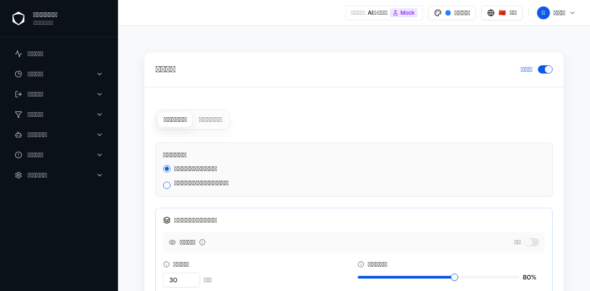
border-blue-200）+ 白色背景（bg-white），此状态修复前后表现一致。状态 S-2：全方向聚合卡片，观察模式开启态（修复后）
触发路径：同上 → 点击聚合卡片右上角「观察模式」Switch → 卡片配色随即切换
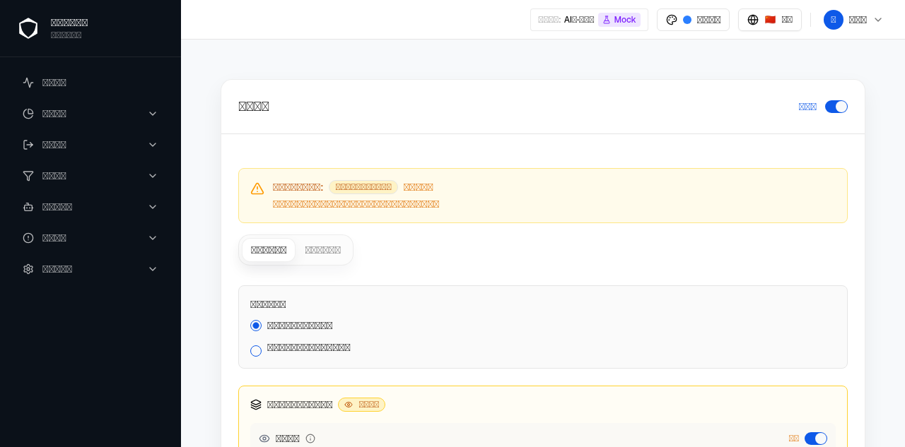
border-amber-300 / bg-amber-50/50），与内部「观察中」黄色徽标视觉统一。状态 S-3：按方向独立检测卡片，观察模式开启态（对齐参照，无变更）
触发路径：检测粒度切换回「按方向独立检测（可勾选多个）」→ 接收方向卡片开启观察模式
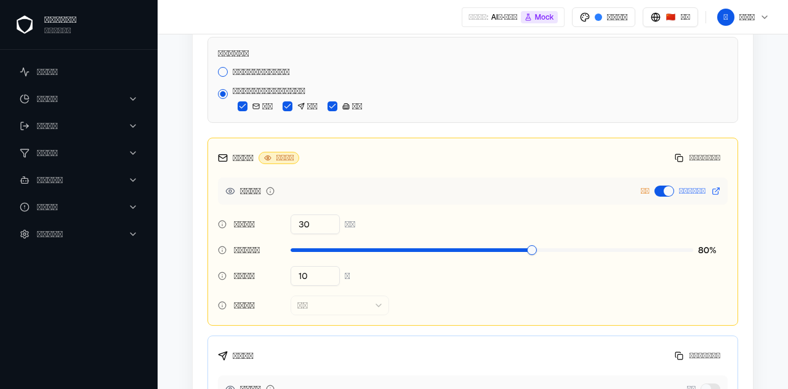
DirectionCard.tsx 原有逻辑，本次未修改）— 与 S-2 修复后的聚合卡片配色完全一致：黄色边框 + 黄色浅底 + 黄色「观察中」徽标。| 状态 | 卡片边框 | 卡片背景 | 内部徽标 | 是否一致 |
|---|---|---|---|---|
| 聚合卡片 · 观察模式关闭 | border-blue-200 | bg-white | 无徽标 | — |
| 聚合卡片 · 观察模式开启（修复前） | border-blue-200（未变） | bg-white（未变） | 黄色「观察中」 | 否，卡片主体颜色不随模式变化 |
| 聚合卡片 · 观察模式开启（修复后） | border-amber-300 | bg-amber-50/50 | 黄色「观察中」 | 是 |
| 方向卡片 · 观察模式开启（参照，未变更） | border-amber-300 | bg-amber-50/50 | 黄色「观察中」 | 是（基准） |
1.3 逐元素说明
| 元素 | 类型 | 变更前 | 变更后 | 源码位置 | 形态/角色差异 |
|---|---|---|---|---|---|
| 聚合卡片外层容器 className | div className | 硬编码固定值：'border rounded-lg p-4 border-blue-200 dark:border-blue-800 bg-white dark:bg-gray-950'（不随 observe_mode 变化） | cn() 条件判断：observe_mode 为 true 时使用 'border-amber-300 dark:border-amber-700 bg-amber-50/50 dark:bg-amber-950/20'，否则使用原蓝白配色；新增过渡动画 transition-[background-color,border-color] duration-[240ms] ease-[cubic-bezier(0.22,1,0.36,1)] motion-reduce:transition-none | AggregateCard.tsx | [Base] |
| 方向卡片外层容器 className（对齐参照，未变更） | div className | — | 本次未修改，作为色值与逻辑的复用来源 | DirectionCard.tsx | [Base] |
GT-12833 认证协议检查：动作精简为5项，默认动作改为"标记放行"
1. PROTOCOL_ACTIONS / DMARC_ACTIONS 由6项精简为5项：移除"进行下一步"（accept）
1.1 方案概述
背景：GT-12801 曾将 accept（"进行下一步"，语义为不做处理、直接传递给下一个协议检查）补齐进 DMARC_ACTIONS，使 SPF / DKIM / DMARC / PTR 四个协议 Tab 统一拥有 6 个动作：reject / discard / quarantine / audit / mark-delivery / accept。但 accept 与 mark-delivery（"标记放行"，语义为不拦截、继续走后续检测流程、可选择附加标记后再投递）在实际处置效果上高度重叠——两者都不拦截邮件、都会继续走流水线下一节点，唯一区别是 mark-delivery 支持附加标记而 accept 不支持，导致管理员在配置动作时容易混淆"进行下一步"与"标记放行"该选哪个。
最终方案：将 accept 从 PROTOCOL_ACTIONS 和 DMARC_ACTIONS 枚举数组中移除，统一收敛为 5 项动作：reject / discard / quarantine / audit / mark-delivery。所有"不拦截、继续检测"的处置需求统一通过 mark-delivery 表达，不再区分"进行下一步"与"标记放行"两个语义重叠的选项。SPF / DKIM / DMARC / PTR 四个协议 Tab 共享同一份精简后的动作列表，改动只需修改 ProtocolChecksSection.tsx 中的两个常量数组，不新增 i18n key（accept 对应的 protocolActionShort.accept / protocolActionDesc.accept key 保留在 messages/zh.json 中未删除，仅不再被这两个动作列表引用）。
| 字段 | 修改前 | 修改后 |
|---|---|---|
| PROTOCOL_ACTIONS 枚举（SPF / DKIM / PTR 共用） | ['reject', 'discard', 'quarantine', 'audit', 'mark-delivery', 'accept']（6 项） |
['reject', 'discard', 'quarantine', 'audit', 'mark-delivery']（5 项） |
| DMARC_ACTIONS 枚举 | ['reject', 'discard', 'quarantine', 'audit', 'mark-delivery', 'accept']（6 项，GT-12801 扩充所得） |
['reject', 'discard', 'quarantine', 'audit', 'mark-delivery']（5 项，与 PROTOCOL_ACTIONS 重新对齐） |
| i18n key | authSpoofing.protocolActionShort.accept / authSpoofing.protocolActionDesc.accept 保留在 messages/zh.json，仅不再被任何动作数组引用（未删除 key，避免影响其它可能的引用点） |
|
| 修改文件 | src/components/security/auth-spoofing/ProtocolChecksSection.tsx — PROTOCOL_ACTIONS / DMARC_ACTIONS 常量（L36-37） |
|
1.2 截图式交互预览
状态 S-1：SPF「硬拒绝 (Fail)」动作下拉展开态（自定义模板）
触发路径：租户管理员 → 策略流水线 → 身份认证与仿冒检测 → 策略模板切换为「自定义」→ 认证协议检查 → SPF Tab → 点击「硬拒绝 (Fail)」行动作下拉框
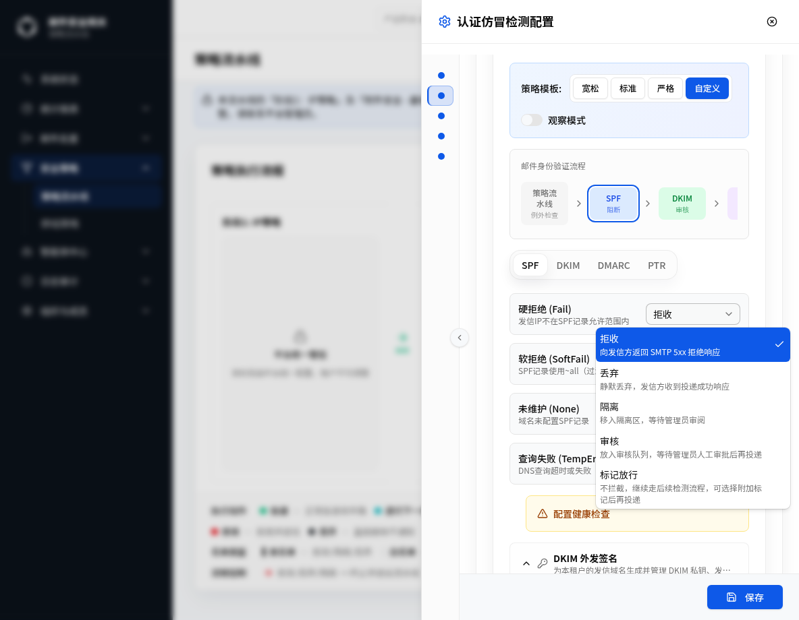
状态 S-2：SPF「软拒绝 (SoftFail)」动作下拉展开态
触发路径：同上 → 点击「软拒绝 (SoftFail)」行动作下拉框
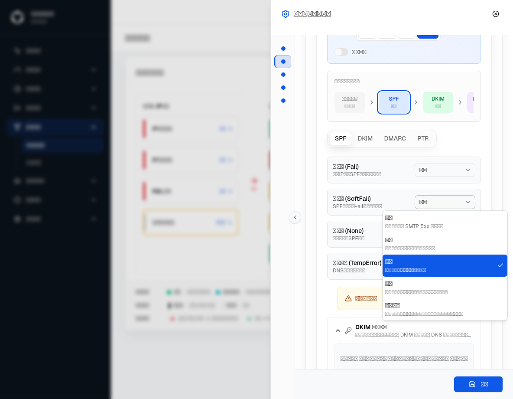
PROTOCOL_ACTIONS 常量在同一协议 Tab 内跨行共享。状态 S-3：DMARC「p=reject」动作下拉展开态
触发路径：认证协议检查 → 切换到 DMARC Tab → 点击「p=reject」行动作下拉框
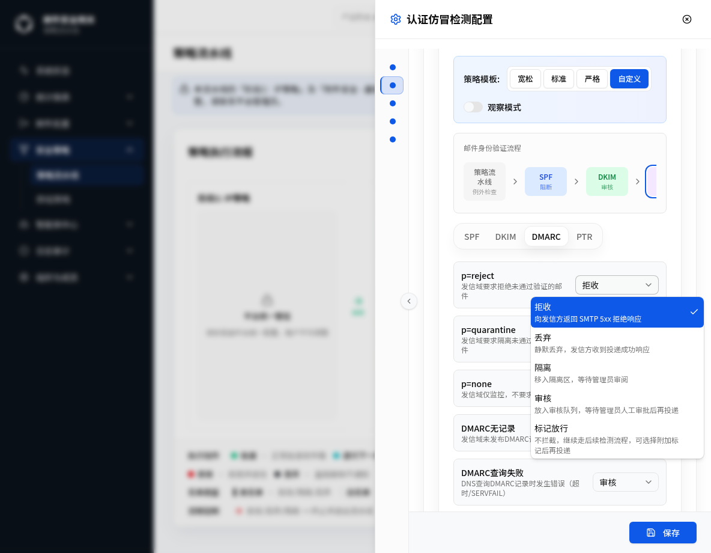
DMARC_ACTIONS 已与 PROTOCOL_ACTIONS 重新对齐；GT-12801 曾专门为 DMARC 新增的「进行下一步」选项已不再出现。| 协议 Tab | 修改前动作数量 | 修改后动作数量 | 「进行下一步」是否仍存在 |
|---|---|---|---|
| SPF | 6 | 5 | 否 |
| DKIM | 6 | 5 | 否 |
| DMARC | 6（GT-12801 扩充） | 5 | 否 |
| PTR | 6 | 5 | 否 |
1.3 逐元素说明
| 元素 | 类型 | 变更前 | 变更后 | 源码位置 | 形态/角色差异 |
|---|---|---|---|---|---|
| PROTOCOL_ACTIONS 常量 | 枚举数组 | ['reject','discard','quarantine','audit','mark-delivery','accept'] | ['reject','discard','quarantine','audit','mark-delivery'] | ProtocolChecksSection.tsx L36 | [Base] |
| DMARC_ACTIONS 常量 | 枚举数组 | ['reject','discard','quarantine','audit','mark-delivery','accept'] | ['reject','discard','quarantine','audit','mark-delivery'] | ProtocolChecksSection.tsx L37 | [Base] |
| Select · 「进行下一步」选项 | 下拉选项（移除） | 存在于全部 4 个协议 Tab | 不再渲染（数组中移除，Select 由数组 map 生成，无需额外条件判断） | ProtocolChecksSection.tsx Select 渲染逻辑 | [Base] |
i18n key protocolActionShort.accept / protocolActionDesc.accept | 文案 key（保留未删除） | 被 6 项动作数组引用 | 不再被任何动作数组引用，key 本身仍在 messages/zh.json 中保留 | messages/zh.json | [Base] |
2. 默认动作与"启用"语义统一改为"标记放行"，行不再因动作为"accept"而隐藏
2.1 方案概述
背景：移除 accept 后，原先依赖 action === 'accept' 判断"该检查项是否关闭"的逻辑需要同步调整。修改前，当某检查子项（CheckItem）在配置中缺省时，会 fallback 到 { enabled: false, action: 'accept' }，即"未配置 = 关闭 + 进行下一步"；同时用户在下拉框中手动选择「进行下一步」时，代码会将该行的 enabled 同步置为 false（等效于关闭该检查项）。这是一处容易引起误解的隐式耦合：动作选择「进行下一步」在 UI 上看起来只是选了一个处置方式，但实际会连带把整行检查"关闭"。
最终方案：fallback 默认值改为 { enabled: true, action: 'mark-delivery' }，即"未配置 = 开启 + 标记放行"；动作选择回调中的 enabled: (v as AuthSpoofingAction) !== 'accept' 简化为固定 enabled: true，动作选择与检查项启停彻底解耦——选择任意动作（包括「标记放行」）都不会再影响该行的启用状态，启用状态只能通过每行独立的启停开关控制。
| 字段 | 修改前 | 修改后 |
|---|---|---|
| 缺省 CheckItem fallback | { enabled: false, action: 'accept', observe_mode: false } |
{ enabled: true, action: 'mark-delivery', observe_mode: false } |
| 动作切换时的 enabled 联动逻辑 | enabled: (v as AuthSpoofingAction) !== 'accept'（选择"进行下一步"会关闭该行） |
enabled: true（动作选择与启停彻底解耦） |
dominantAction 兜底值（auth-spoofing-labels.ts） |
fallback: AuthSpoofingAction = 'accept' |
fallback: AuthSpoofingAction = 'mark-delivery' |
| 修改文件 | ProtocolChecksSection.tsx（L172、L194 附近）、auth-spoofing-labels.ts（dominantAction 函数签名默认值） |
|
2.2 截图式交互预览
状态 S-4：「宽松」模板下 SPF「未维护 (None)」/「查询失败 (TempError)」行（修改后）
触发路径：策略模板切换为「宽松」→ 确认覆盖当前配置 → 认证协议检查 → SPF Tab → 滚动查看「未维护」「查询失败」两行
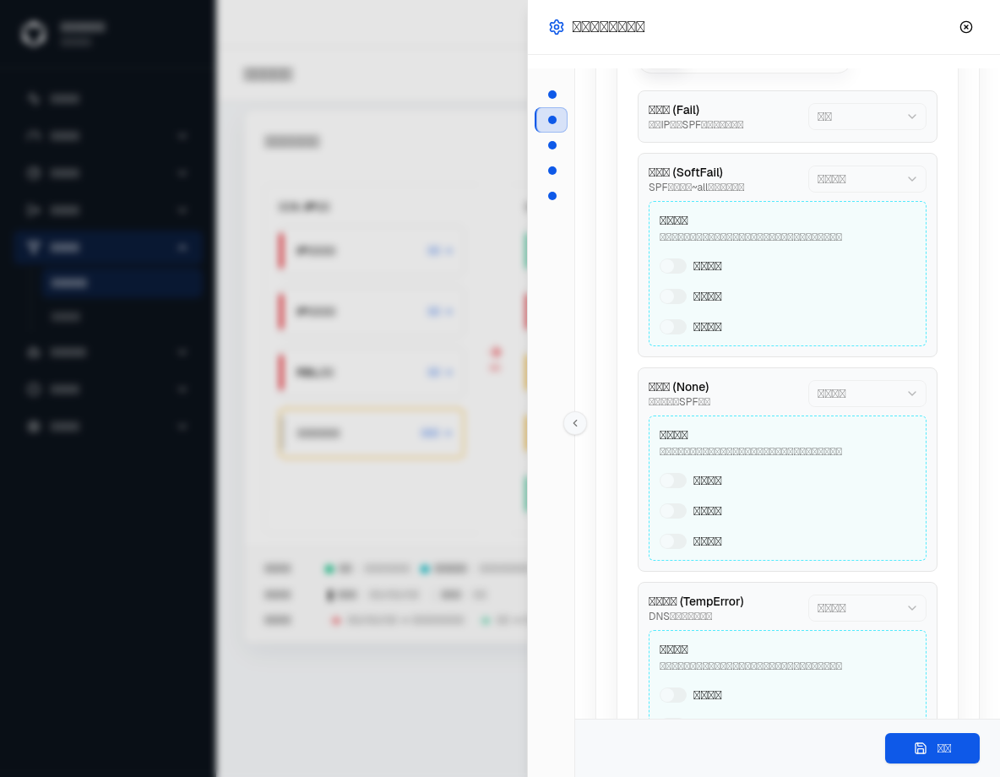
| 检查项 | 修改前动作 | 修改前启用状态 | 修改后动作 | 修改后启用状态 |
|---|---|---|---|---|
| SPF · 未维护 (None) | accept | 关闭（enabled: false，由 accept 联动） | mark-delivery | 开启（enabled: true） |
| SPF · 查询失败 (TempError) | accept | 关闭 | mark-delivery | 开启 |
| DKIM · partial / none | accept | 关闭 | mark-delivery | 开启 |
| PTR · noptr | accept | 关闭 | mark-delivery | 开启 |
2.3 逐元素说明
| 元素 | 类型 | 变更前 | 变更后 | 源码位置 | 形态/角色差异 |
|---|---|---|---|---|---|
| CheckItem 缺省 fallback | 对象字面量 | { enabled: false, action: 'accept', observe_mode: false } | { enabled: true, action: 'mark-delivery', observe_mode: false } | ProtocolChecksSection.tsx L172 | [Base] |
| Select onValueChange 回调 | 事件处理逻辑 | enabled: v !== 'accept' | enabled: true | ProtocolChecksSection.tsx L194 附近 | [Base] |
dominantAction() fallback 参数 | 函数默认参数 | 'accept' | 'mark-delivery' | auth-spoofing-labels.ts | [Base] |
3. "宽松"模板：SPF/DKIM/PTR 中原 accept 场景全部改为 mark-delivery
3.1 方案概述
背景：「宽松」预设模板（TEMPLATES.loose）此前对部分低风险场景（SPF none / temperror、DKIM partial / none、PTR noptr）使用 accept 作为预设动作，语义为"不做处理直接放行、且该检查行关闭"。「标准」「严格」模板未使用 accept（已全部是 mark-delivery 或更严格的动作）。
最终方案：「宽松」模板中原先所有 accept 预设值统一替换为 mark-delivery，与「标准」「严格」模板的动作取值风格保持一致；同时 applyGroup() 内部两处根据 action !== 'accept' 计算 enabled 的逻辑（应用模板时的已有 key 分支与新增 key 分支）均简化为固定 enabled: true，与变更 2 的解耦逻辑保持一致——应用任何模板后，所有检查行都是启用态，只是动作严格度不同。
| 字段 | 修改前 | 修改后 |
|---|---|---|
| loose.spf | { fail:'quarantine', softfail:'mark-delivery', none:'accept', temperror:'accept' } |
{ fail:'quarantine', softfail:'mark-delivery', none:'mark-delivery', temperror:'mark-delivery' } |
| loose.dkim | { fail:'quarantine', neutral:'mark-delivery', partial:'accept', none:'accept' } |
{ fail:'quarantine', neutral:'mark-delivery', partial:'mark-delivery', none:'mark-delivery' } |
| loose.dmarc | 未使用 accept，本次未修改：{ reject:'quarantine', quarantine:'mark-delivery', none:'mark-delivery', no_record:'mark-delivery', query_fail:'mark-delivery' } |
|
| loose.ptr | { noptr:'accept', nomatch:'mark-delivery', ehlo_mismatch:'mark-delivery' } |
{ noptr:'mark-delivery', nomatch:'mark-delivery', ehlo_mismatch:'mark-delivery' } |
applyGroup() 已有 key 分支 enabled 计算 |
enabled: action !== 'accept' |
enabled: true |
applyGroup() 新增 key 分支 enabled 计算 |
enabled: action !== 'accept' |
enabled: true |
| 修改文件 | src/lib/auth-spoofing-templates.ts — TEMPLATES.loose 与 applyGroup() |
|
3.2 截图式交互预览
本变更点的可观察效果与变更 2 状态 S-4 完全一致（「宽松」模板应用后 SPF「未维护」「查询失败」两行由"关闭 + accept"变为"开启 + 标记放行"），复用 2.2 截图式交互预览 · S-4，不再重复截图。
「标准」「严格」模板对照（无变更）：「标准」「严格」模板预设值本身未使用 accept，切换到这两个模板不会观察到本次变更带来的行为差异，仅「宽松」模板受影响。
3.3 逐 key 说明
| 模板 | 协议 | 场景 key | 修改前动作 | 修改后动作 |
|---|---|---|---|---|
| 宽松 | SPF | none | accept | mark-delivery |
| 宽松 | SPF | temperror | accept | mark-delivery |
| 宽松 | DKIM | partial | accept | mark-delivery |
| 宽松 | DKIM | none | accept | mark-delivery |
| 宽松 | PTR | noptr | accept | mark-delivery |
GT-12826 内容规则规则使用错误图标问题解决
XCircle 失败图标（border-rose-200 bg-rose-50 text-rose-700），「未命中」反而使用绿色 CheckCircle2 成功图标（border-emerald-200 bg-emerald-50 text-emerald-700）。「命中」是模拟测试按用户配置的匹配条件正常判定出的结果，代表规则本身工作正常，不应展示为失败态；红色 destructive 视觉应只保留给接口调用失败、正则解析异常等真正的执行错误。1. 模拟测试结果态：命中/未命中不再使用红色失败图标与绿色成功图标，改为中性信息色 + 靶心图标 / muted 中性灰
1.1 方案概述
背景：「命中」「未命中」是模拟测试对"测试文本是否触发该规则"给出的两种正常判定结果，二者都不代表处置好坏——命中不等于"出错"，未命中也不等于"通过"。修改前的实现借用了通用的成功/失败配色语义（红=失败、绿=成功），把"命中"渲染成红色叉号，容易让管理员误判为"测试失败/规则配置有问题"，而"未命中"却显示绿色对勾，容易误判为"测试通过"，两者含义与颜色语义直接矛盾。
最终方案：命中态改为中性信息配色（浅蓝 sky 系）+ Target（靶心）图标，语义为"已命中该匹配条件"，不含好坏判断；未命中态改为使用设计系统的中性 muted 前景/背景 token（浅色主题下接近浅灰）+ MinusCircle（减号圆圈）图标，语义为"未命中，无需处理"。两者都移除 destructive 红色与 success 绿色，视觉上不再暗示对错。图标由 lucide-react 的 XCircle/CheckCircle2 替换为 Target/MinusCircle。
| 字段 | 修改前 | 修改后 |
|---|---|---|
| 命中态容器 className | border-rose-200 bg-rose-50 text-rose-700 |
border-sky-200 bg-sky-50 text-sky-700 dark:border-sky-900 dark:bg-sky-950/30 dark:text-sky-300 |
| 未命中态容器 className | border-emerald-200 bg-emerald-50 text-emerald-700 |
border-border bg-muted text-muted-foreground（跟随设计系统主题 token，非硬编码颜色） |
| 命中态图标 | XCircle（叉号，失败语义） |
Target（靶心，中性"已命中"语义） |
| 未命中态图标 | CheckCircle2（对勾，成功语义） |
MinusCircle（减号圆圈，中性"无内容/无需处理"语义） |
| 文案（未变） | contentRules.testMatched「匹配」/ contentRules.testNotMatched「不匹配」，文案本身未调整，仅调整配色与图标 |
|
| 修改文件 | src/components/security/content-rules/ContentRuleDrawer.tsx — lucide-react import 与结果渲染区块（原 testMatch !== null 分支） |
|
1.2 截图式交互预览
状态 S-1：命中态（修改后）
触发路径：租户管理员 → 策略流水线 → 内容规则 → 新建规则 → 匹配内容填入「aaaa」→ 点击「模拟测试」展开面板 → 测试内容填入「aaaa」→ 点击「运行测试」
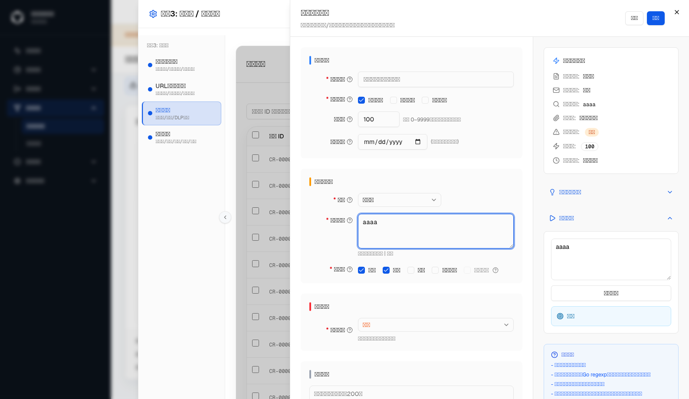
bg-sky-50）、图标为靶心 Target，不含红色或失败语义。已通过浏览器实测验证（测试内容与匹配内容均为「aaaa」，规则命中）。状态 S-2：未命中态（修改后）
触发路径：同上 → 测试内容改为「zzzz」（与匹配内容「aaaa」不同）→ 点击「运行测试」
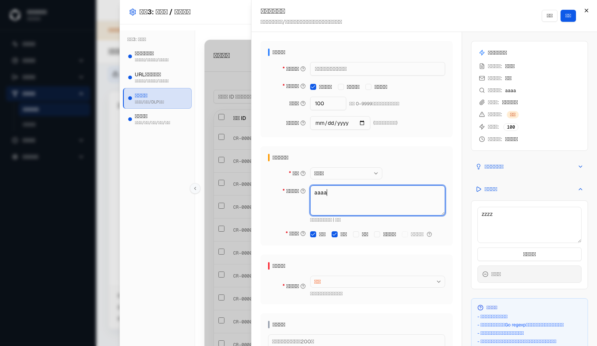
bg-muted 中性灰、图标为减号圆圈 MinusCircle，不再显示绿色对勾成功态。已通过浏览器实测验证。状态 S-3：接口执行失败态（未变更，行为说明）
触发路径：同上 → testContentRule 接口调用抛出异常（网络失败 / 正则解析异常等）
本状态是变更 2 新增的独立 testRunError 分支，与命中/未命中结果渲染路径互斥，详见 变更 2；由于需要人工构造接口异常才能触发，未安全验证的截图记为「不适用」，行为已通过源码逻辑（catch 分支）确认。
| 结果类型 | 修改前配色 | 修改后配色 | 修改前图标 | 修改后图标 |
|---|---|---|---|---|
| 命中（Target 语义变更） | 红色 rose（失败语义） | 浅蓝 sky（中性信息） | XCircle | Target |
| 未命中 | 绿色 emerald（成功语义） | muted 中性灰（主题 token） | CheckCircle2 | MinusCircle |
| 接口执行失败（新增独立分支） | 红色 destructive（border-destructive/30 bg-destructive/10 text-destructive），此前与"未命中"共用同一渲染路径 | AlertTriangle | ||
1.3 逐元素说明
| 元素 | 类型 | 变更前 | 变更后 | 源码位置 | 形态/角色差异 |
|---|---|---|---|---|---|
| 模拟测试结果框（命中） | 状态反馈容器 | border-rose-200 bg-rose-50 text-rose-700 + XCircle | border-sky-200 bg-sky-50 text-sky-700（暗色 dark:border-sky-900 dark:bg-sky-950/30 dark:text-sky-300）+ Target | ContentRuleDrawer.tsx 结果渲染区块 | [Base] |
| 模拟测试结果框（未命中） | 状态反馈容器 | border-emerald-200 bg-emerald-50 text-emerald-700 + CheckCircle2 | border-border bg-muted text-muted-foreground + MinusCircle | ContentRuleDrawer.tsx 结果渲染区块 | [Base] |
| lucide-react 图标 import | 依赖引用 | CheckCircle2、XCircle | Target、MinusCircle（新增），移除 CheckCircle2/XCircle 引用 | ContentRuleDrawer.tsx 顶部 import | [Base] |
i18n key contentRules.testMatched / testNotMatched | 文案 key（未变） | 「匹配」/「不匹配」 | 文案不变，仅去除与颜色语义的隐性绑定 | messages/zh.json / messages/en.json | [Base] |
2. 新增独立的接口执行错误态（testRunError），与命中/未命中结果彻底解耦
2.1 方案概述
背景：修改前，testContentRule 接口调用失败时（catch 分支）直接 setTestMatch(false)，把"接口报错"当作"未命中"处理，渲染成绿色成功态图标，彻底掩盖了真实的执行故障——管理员看到绿色对勾，会误以为测试已正常跑完且未命中，无法察觉后端异常。
最终方案：新增独立状态 testRunError，与 testMatch（命中/未命中，均为正常结果）完全分离：接口调用失败时不再写入 testMatch（保持为 null），而是把 t('contentRules.testFailed')（新增 i18n key，zh:「测试执行失败，请稍后重试」/ en:「Test failed to run, please try again」）写入 testRunError，渲染为红色 destructive 态 + AlertTriangle 图标；结果渲染逻辑改为优先判断 testRunError，仅当无执行错误时才展示 testMatch 命中/未命中结果，两条路径互斥。测试内容变更、动作切换、重新点击「运行测试」等场景均同步清空 testRunError，与既有 testMatch/testError 清空逻辑保持一致。
| 字段 | 修改前 | 修改后 |
|---|---|---|
| 接口调用失败（catch 分支） | setTestMatch(false)（伪装成"未命中"，渲染绿色成功态） |
setTestMatch(null); setTestRunError(t('contentRules.testFailed'))（保持中立，单独走 destructive 提示） |
| 结果渲染优先级 | 仅 testMatch !== null 一条分支 |
testRunError 优先渲染；否则 testMatch !== null 渲染命中/未命中（互斥） |
| 状态清空联动 | setTestMatch(null); setTestError('')（测试内容变更、切换动作、重新测试时） |
额外同步 setTestRunError('')，三处清空点均已补齐 |
| 新增 i18n key | — | contentRules.testFailed（zh:「测试执行失败，请稍后重试」/ en:「Test failed to run, please try again」） |
| 修改文件 | ContentRuleDrawer.tsx（新增 testRunError state、handleTest catch 分支、3 处清空联动、结果渲染 JSX）、messages/zh.json、messages/en.json |
|
2.2 逐元素说明
| 元素 | 类型 | 变更前 | 变更后 | 源码位置 | 形态/角色差异 |
|---|---|---|---|---|---|
testRunError state | 新增 useState | 不存在 | const [testRunError, setTestRunError] = useState('') | ContentRuleDrawer.tsx | [Base] |
| 接口失败提示框 | 状态反馈容器（新增独立渲染分支） | 复用未命中态绿色成功框 | border-destructive/30 bg-destructive/10 text-destructive + AlertTriangle，独立于命中/未命中渲染 | ContentRuleDrawer.tsx 结果渲染区块 | [Base] |
i18n key contentRules.testFailed | 文案 key（新增） | 不存在 | zh:「测试执行失败，请稍后重试」/ en:「Test failed to run, please try again」 | messages/zh.json / messages/en.json | [Base] |
| 单元测试锁定回归 | 测试文件（新增） | 不存在 | ContentRuleDrawer.test.tsx 新增用例，断言命中态 className 不含 rose/destructive，未命中态不含绿色成功态 | src/components/security/content-rules/ContentRuleDrawer.test.tsx | [Base] |
GT-12818 附件安全-反病毒去掉拒收，增加审核
virus_action）执行动作列表需要调整——移除「拒收」（reject）动作，并新增「审核」（audit）动作。调整后该下拉的可选动作为 隔离 / 审核 / 丢弃 三项。本需求仅调整「发现病毒后的处置」的动作候选列表，不改动同一页签下的「扫描超时/不可用时的动作」（timeout_action，仍为 拒收 / 丢弃 / 隔离 / 继续流水线 四项）以及其它任何功能模块。文案与描述全部复用项目 next-intl 国际化框架的既有 key（actions.* / actionDesc.*），未新增硬编码文案。1. 发现病毒后的处置：移除「拒收」（reject）执行动作
1.1 方案概述
背景：「发现病毒后的处置」用于配置确认检出病毒后对邮件采取的动作。此前候选列表为 ['quarantine', 'reject', 'discard']（隔离 / 拒收 / 丢弃）。「拒收」（reject）表示在 SMTP 阶段拒绝接收并向发件方回退信（452/550），对"已确认为病毒"的邮件不再作为推荐处置动作，需从该下拉中移除。
最终方案：在 AntivirusTab.tsx 中把 VIRUS_ACTIONS 常量移除 'reject'；同时在 attachment-security.ts 的 AntivirusActionConfig.virus_action 类型上追加 'reject' 到 Exclude 排除项，从类型层面禁止该动作被写入。i18n key actions.reject / actionDesc.reject 本身保留（仍被 timeout_action 等其它场景引用），仅不再出现在「发现病毒后的处置」下拉中。
| 字段 | 修改前 | 修改后 |
|---|---|---|
VIRUS_ACTIONS 常量 |
['quarantine', 'reject', 'discard'] |
['quarantine', 'audit', 'discard']（同步含变更 2 的 audit） |
virus_action 类型 |
Exclude<AttachmentAction, 'accept' | 'partial_skip'> |
Exclude<AttachmentAction, 'accept' | 'partial_skip' | 'reject'> |
| 下拉候选项（发现病毒后的处置） | 隔离 / |
隔离 / 审核 / 丢弃（不含拒收） |
| 不受影响项 | TIMEOUT_ACTIONS（扫描超时/不可用动作）保持 ['quarantine', 'reject', 'discard', 'accept'] 不变，「拒收」在超时动作中仍保留 |
|
1.2 截图式交互预览
状态 S-1：发现病毒后的处置下拉打开态（修改后，不含「拒收」）
触发路径：产品形态切换为「AI版·单租户」→ 策略流水线 → 「附件安全检测」卡片点击「配置」→ 抽屉内切换到「反病毒引擎」页签 → 点击「发现病毒后的处置」下拉。
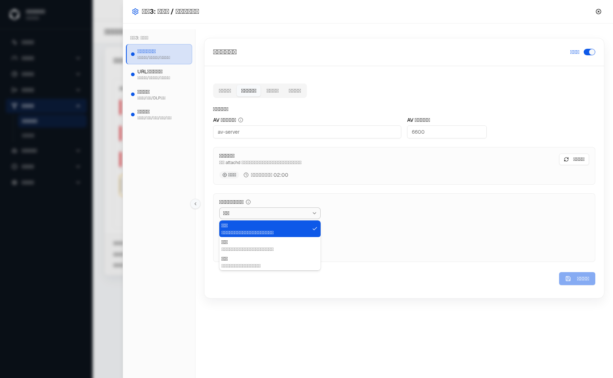
option 文本依次为「隔离 邮件进入隔离区，管理员审核后可放行或删除」「审核 邮件进入待审核队列，人工确认后投递或退回」「丢弃 静默丢弃，发件方无感知，无退信」，列表中已不再包含「拒收」。（本截图为 VM 内 Playwright + Noto Sans CJK 采集，中文正常渲染；并已用可访问性树核对三项 option 权威文本与上述一致。）1.3 逐元素说明
| 元素 | 类型 | 变更前 | 变更后 | 源码位置 | 形态/角色差异 |
|---|---|---|---|---|---|
「发现病毒后的处置」下拉（data-testid="antivirus-virus-action"） | Select 单选 | 候选 隔离 / 拒收 / 丢弃 | 候选 隔离 / 审核 / 丢弃（移除拒收） | AntivirusTab.tsx — VIRUS_ACTIONS.map | [Base] |
reject 选项项（antivirus-virus-action-reject） | SelectItem | 存在，文案「拒收 / 在 SMTP 阶段拒绝接收，发件方收到退信通知（452/550）」 | AntivirusTab.tsx | [Base] | |
virus_action 类型约束 | TS 类型 | 允许 reject | 类型 Exclude 追加 'reject'，禁止写入 | attachment-security.ts | [Base] |
i18n key actions.reject / actionDesc.reject | 文案 key（保留） | 保留不删除（仍被 timeout_action 等场景引用），仅从本下拉解除引用 | messages/zh.json / messages/en.json | [Base] | |
2. 发现病毒后的处置：新增「审核」（audit）执行动作
2.1 方案概述
背景：对确认检出病毒的邮件，除「隔离」「丢弃」外，还需要一种"进入待审核队列、由人工确认后再投递或退回"的处置方式，即「审核」（audit）。audit 动作已存在于系统通用动作枚举 AttachmentAction 及 i18n（actions.audit = 审核 / Review，actionDesc.audit = 「邮件进入待审核队列，人工确认后投递或退回」），此前仅未在「发现病毒后的处置」下拉中提供。
最终方案：在 AntivirusTab.tsx 的 VIRUS_ACTIONS 中新增 'audit'，位于「隔离」与「丢弃」之间，最终顺序为 ['quarantine', 'audit', 'discard']（隔离 / 审核 / 丢弃）。virus_action 类型本身已允许 audit（未在 Exclude 中排除），无需改动类型；下拉选项的名称与描述副行直接复用 t('actions.audit') / t('actionDesc.audit')，无新增文案。
| 字段 | 修改前 | 修改后 |
|---|---|---|
| 候选项是否含「审核」 | 否 | 是（audit，位于隔离与丢弃之间） |
| 选项名称 / 描述来源 | — | actions.audit「审核」/ actionDesc.audit「邮件进入待审核队列，人工确认后投递或退回」（既有 i18n key，zh/en 均已存在） |
默认值（DEFAULT_ANTIVIRUS_ACTIONS.virus_action） | 'quarantine'（隔离）不变，新增「审核」不改变默认选中项 | |
2.2 截图式交互预览
状态 S-2：下拉中「审核」选项可见（修改后）
触发路径：同 S-1，展开「发现病毒后的处置」下拉。
option 权威文本为「审核 邮件进入待审核队列，人工确认后投递或退回」，确认新增生效。2.3 逐元素说明
| 元素 | 类型 | 变更前 | 变更后 | 源码位置 | 形态/角色差异 |
|---|---|---|---|---|---|
「审核」选项项（antivirus-virus-action-audit） | SelectItem（新增） | 不存在于本下拉 | 名称「审核」+ 描述「邮件进入待审核队列，人工确认后投递或退回」，位于隔离与丢弃之间 | AntivirusTab.tsx — VIRUS_ACTIONS | [Base] |
| 选项名称 / 描述 | i18n 文案（复用） | — | t('actions.audit') / t('actionDesc.audit')（既有 key，未新增） | messages/zh.json / messages/en.json | [Base] |
| 单元测试 | 回归验证 | AntivirusTab.test.tsx 现有用例通过；类型检查（tsc --noEmit）无附件安全相关报错 | src/components/security/attachment-security/AntivirusTab.test.tsx | [Base] | |
GT-12818 附件安全检测——加密附件：提示词存在误导性问题解决
1. 加密附件：移除误导性默认提示词
1.1 方案概述
需求名称：GT-12818 附件安全检测——加密附件：提示词存在误导性问题解决。
移除“加密附件”页签中“收信方向默认：继续流水线”辅助描述。该文案容易使用户误以为页面存在单独的收信方向默认配置，且可能将解密失败处置与收信方向混淆。仅移除展示文案及其专用国际化键，不改变检测策略、解密失败处置、密码来源、密码本、高级选项或保存逻辑。
文案继续由项目 next-intl 国际化框架管理；本次同步移除中、英、泰、俄语言资源中仅服务于该描述的 encrypted.receiveDefault 键，未新增硬编码中文。
1.2 截图式交互预览
状态 S-3：加密附件页签移除误导性提示后的正常态
触发路径：阶段3：内容层 → 附件安全检测 → 配置 → 切换“加密附件”页签。
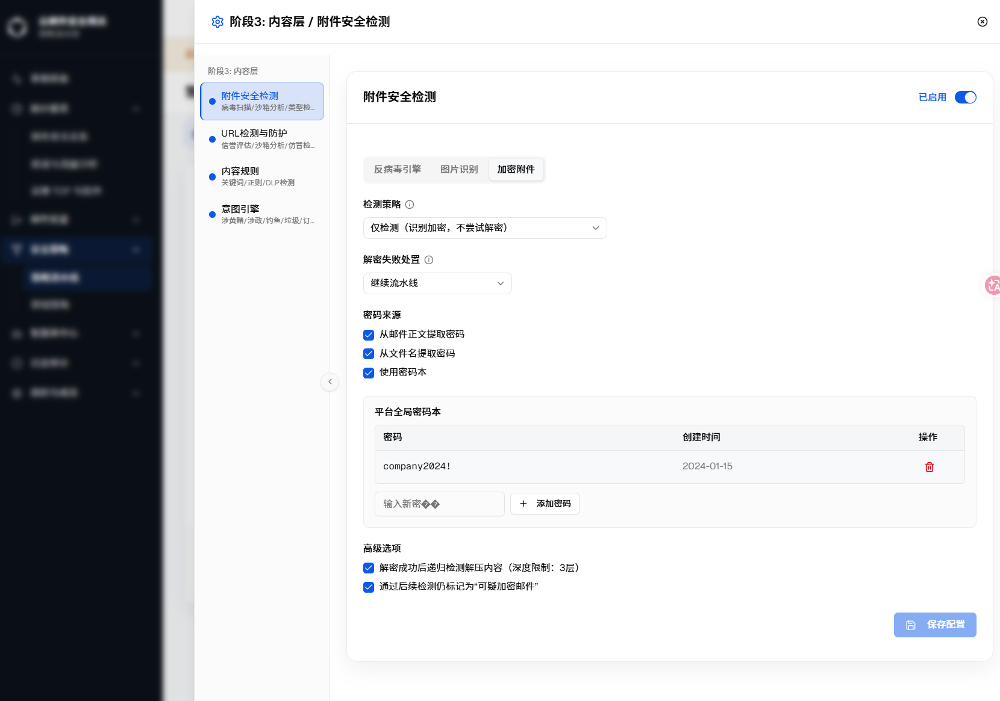
1.3 逐元素说明
| 元素 | 修改前 | 修改后 | 事实源 | 形态/角色差异 |
|---|---|---|---|---|
| 加密附件页签提示 | 显示“收信方向默认：继续流水线” | 完全移除该段辅助文案，不保留空占位 | EncryptedAttachmentTab.tsx | [Base] |
| 国际化键 | encrypted.receiveDefault 存在并被组件引用 | 组件引用及 zh/en/th/ru 资源键均移除 | messages/zh.json、messages/en.json、messages/th.json、messages/ru.json | [Base] |
| 保留配置 | 检测策略、解密失败处置、密码来源、平台全局密码本、高级选项和保存配置不变 | EncryptedAttachmentTab.tsx | [Base] | |
| 验证 | 附件安全相关测试通过；中文相关文件已完成乱码字符搜索自检，无匹配 | AttachmentSecurityPage.i18n-parity.test.ts | [Base] | |
GT-12556 攻击时段分析：去掉雍总的邮件类型陈列模块
1. 移除攻击类型图例陈列
1.1 方案概述
需求名称：GT-12556 攻击时段分析：去掉雍总的邮件类型陈列模块。
在邮件安全总览的“攻击时段分析”卡片中，移除堆叠柱状图底部的攻击类型图例陈列模块。仅移除图例展示及其占用的底部布局空间，不改变攻击时段数据、堆叠柱状图、方向筛选、日内/周内分布切换、攻击峰值提示或高峰时段列表。
本次变更不新增页面文案；页面继续使用项目现有国际化框架。由于仅移除展示组件，没有新增或修改国际化键。
1.2 截图式交互预览
状态 S-1：攻击时段分析移除攻击类型图例后的正常态
触发路径：打开邮件安全总览 → 定位“攻击时段分析”卡片 → 保持“全部”和“日内分布”选中。
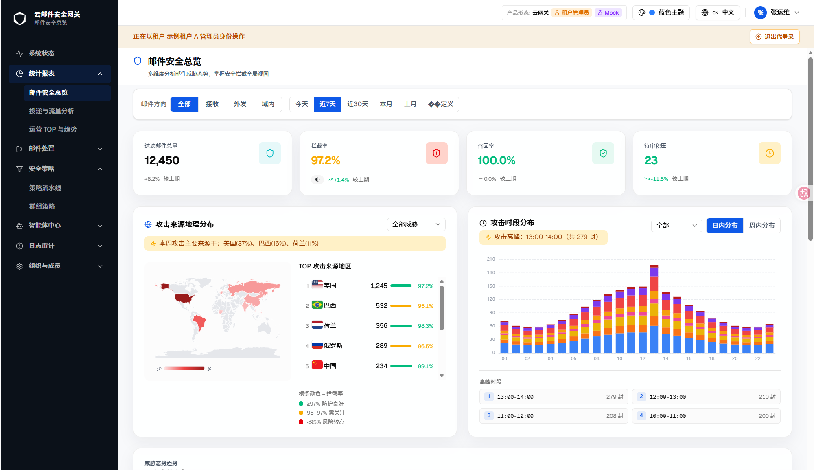
1.3 逐元素说明
| 元素 | 修改前 | 修改后 | 事实源 | 形态/角色差异 |
|---|---|---|---|---|
| 攻击类型图例 | 显示在堆叠柱状图底部，列出多种攻击邮件类型及颜色标识 | 完全移除，不保留空占位 | src/components/statistics/security-overview/TimeDistributionCard.tsx | [Base] |
| 图表布局 | 为底部单行滚动图例预留空间 | 取消图例预留空间，图表内容区域恢复为无图例布局 | TimeDistributionCard.tsx 的 ECharts grid 配置 | [Base] |
| 保留元素 | 攻击峰值提示、全部/方向筛选、日内分布/周内分布切换、堆叠柱状图、高峰时段列表均保持不变 | TimeDistributionCard.tsx | [Base] | |
| 验证 | 攻击时段测试通过；相关中文源码完成乱码字符搜索自检，无匹配 | time-distribution-peaks.test.tsx | [Base] | |
GT-11990 投递与流量分析页面优化
变更 1：指标名称与统计口径明确
本需求统一页面指标的业务含义与统计口径。所有范围指标受时间范围、方向和租户范围筛选条件约束；今日按小时展示，其他范围按天展示。
| 指标 | 业务含义 | 统计口径 |
|---|---|---|
| 收发信总量 | 接收、外发、域内邮件的总量 | 接收总量 + 外发总量 + 域内总量；三类方向互斥，不重复计数。 |
| 接收总量 / 外发总量 / 域内总量 | 对应方向的邮件数量 | 选定时间范围与租户范围内，对应方向的邮件总数。 |
| 方向成功率 | 对应方向完成成功的比例 | 方向成功数 ÷ 方向总量。 |
| 退信率 | 对应方向失败或退信的比例 | 方向失败/退信数 ÷ 方向总量；明细隐藏项仍计入该统计。 |
| 平均延迟 | 邮件完成该方向处理的平均耗时 | 从进入系统到完成接收、外发或域内投递的平均耗时。 |
| 外发延迟 P99 | 外发延迟的高位尾部表现 | 99% 的外发邮件在该耗时内完成；该指标已从外发方向页面移除，不再展示。 |
| 威胁邮件数 / 内部威胁检出率 | 域内邮件安全检测结果 | 威胁邮件数为选定范围内识别出的域内威胁数；检出率为威胁邮件数 ÷ 域内总量。 |
| 检测队列 | 当前等待安全检测或旁路处理的任务量 | 当前时点的检测积压快照，不是所选时间范围内新增邮件量。 |
| 队列趋势 | 各时间点的待处理/待投递队列快照 | 该模块已从外发方向页面移除，不再展示或参与页面统计。 |
变更 2：方向明细分类与展示文案优化
仅调整当前方向的明细展示，不删除后端原始失败原因，不改变总量、成功率、退信率或威胁指标。隐藏分类仍属于失败原因统计，并继续计入整体统计；“延迟投递”仅改显示文案为“检测中”。
| 方向 | 展示变更 | 统计影响 |
|---|---|---|
| 全部 | “延迟投递”改为“检测中”。 | 仅文案变化，原始数量与统计含义不变。 |
| 接收 | “反垃圾处理队列”改为“检测队列”；“延迟投递”改为“检测中”；明细隐藏“用户不存在”“邮箱已满”。 | 隐藏项仍计入接收失败/退信统计，未从分母或总量扣除。 |
| 外发 | “延迟投递”改为“检测中”；明细隐藏“目标拒绝”“DNS失败”“RBL拦截”。 | 隐藏项仍计入外发失败/退信统计，未从分母或总量扣除。 |
| 域内 | 明细隐藏“内部垃圾”“内部钓鱼”“内部病毒”。 | 隐藏项仍计入域内威胁及整体统计。 |
变更 3：外发方向移除延迟百分位趋势与队列趋势
外发方向不再提供“延迟百分位趋势”和“队列趋势”两个模块。模块代码、页面引用、专用数据字段、mock 数据、测试引用及对应国际化键均已删除；内部方向仍保留其自身的延迟区间分布，不受本次变更影响。
保留：外发 KPI、流量趋势、失败原因明细及其他方向的延迟/队列能力。
截图式交互预览
状态 S-1：投递与流量分析页面默认态
触发路径：打开 /zh/statistics/delivery-traffic，选择外发方向。
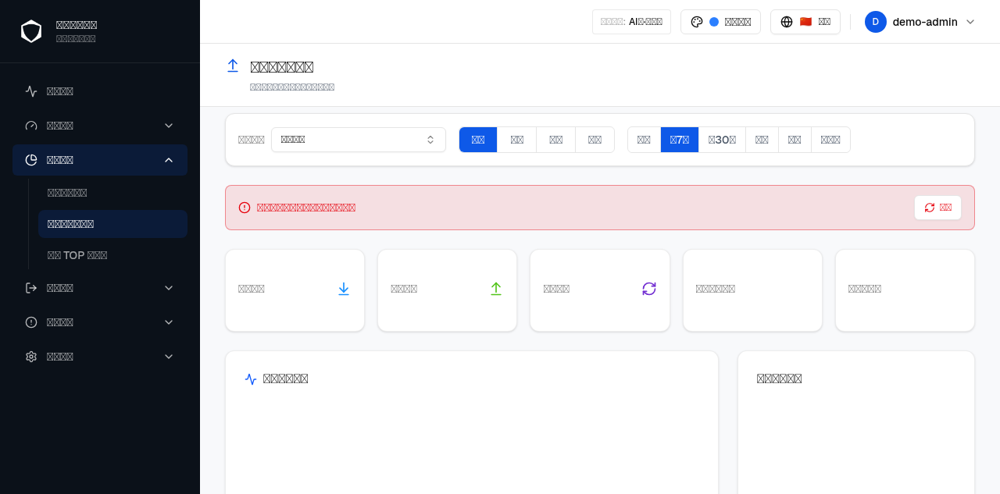
逐元素与事实源
| 元素/数据 | 变更后 | 事实源 | 形态/角色差异 |
|---|---|---|---|
| 页面路由 | /zh/statistics/delivery-traffic | DeliveryTrafficPage.tsx | [Base] |
| 方向筛选 | 接收、外发、域内、全部；外发方向不显示两个已移除模块 | DeliveryTrafficPage.tsx | [Base] |
| 明细分类 | 按方向展示/隐藏分类；隐藏项不改变原始统计 | DetailTable.tsx、delivery-traffic API | [Base] |
| 国际化 | “检测中”“检测队列”等文案来自 messages 多语言资源 | messages/zh.json、messages/en.json | [Base] |
| 外发趋势模块 | QueueTrendChart.tsx 已删除；外发百分位分支已删除 | [Base] |
验证与待确认事项
- 已按需求保留原始失败原因统计，仅从对应方向明细列表移除指定分类。
- 已验证外发方向不再出现两个被移除模块；相关页面单元测试通过。
- 中文文档使用 UTF-8；本次新增内容不包含乱码字符。
- 产品形态/角色矩阵：本次为同一路由同一展示规则，无新增形态或角色差异，沿用既有矩阵 [Base]。
V. 版本历史
| 版本 | 日期 | 摘要 |
|---|---|---|
| v14 | 2026-08-08 | 新增独立一级需求目录 GT-12818「附件安全检测——加密附件：提示词存在误导性问题解决」（不作为既有 GT-12818 反病毒需求的第 3 个变更点）：移除“收信方向默认：继续流水线”辅助描述；通过项目 next-intl 同步移除 zh/en/th/ru 的 encrypted.receiveDefault 专用键；检测策略、解密失败处置、密码来源、密码本、高级选项及保存逻辑不变；使用用户提供的修改后真实页面截图作为 S-3 结果态证据。版本历史 v13→v14。 |
| v13 | 2026-08-08 | 追加 GT-11990「投递与流量分析页面优化」需求体：明确收发信、方向、成功率、退信率、延迟、威胁与检测队列的业务含义及统计口径；按方向优化明细分类和“检测中/检测队列”文案，隐藏指定失败原因但保留其原始统计；彻底移除外发方向“延迟百分位趋势”和“队列趋势”模块及其页面、类型、mock、测试、国际化引用；附真实浏览器默认态截图。版本历史 v12→v13。 |
| v12 | 2026-08-08 | 追加 GT-12818「附件安全-反病毒去掉拒收，增加审核」需求体（2 个变更点）。变更 1：反病毒引擎「发现病毒后的处置」（virus_action）移除「拒收」（reject）执行动作——AntivirusTab.tsx 的 VIRUS_ACTIONS 由 ['quarantine', 'reject', 'discard'] 去掉 reject，并在 attachment-security.ts 的 AntivirusActionConfig.virus_action 类型 Exclude 追加 'reject'；i18n key actions.reject/actionDesc.reject 保留（仍被 timeout_action 引用），仅从本下拉解除引用。变更 2：同一下拉新增「审核」（audit）执行动作，最终顺序为 ['quarantine', 'audit', 'discard']（隔离/审核/丢弃），名称与描述复用既有 i18n key actions.audit「审核」/actionDesc.audit「邮件进入待审核队列，人工确认后投递或退回」（zh/en 均已存在），virus_action 类型本身已允许 audit 无需改动，默认值仍为 quarantine。不改动「扫描超时/不可用动作」timeout_action（仍为拒收/丢弃/隔离/继续流水线）及其它模块。附截图 1 张（VM 内 Playwright chromium 采集，VM 已装 Noto Sans CJK 字体，中文正常渲染）：gt12818-virus-action-dropdown（发现病毒后的处置下拉展开，候选隔离/审核/丢弃三项、无拒收），并已用可访问性树核对选项权威文本与视觉一致。目录追加 GT-12818 一级条目及两个变更点子章节；差异标注追加 D-006；待确认事项追加 Q-004（初记为字体渲染方块，现已改用 VM 内 Playwright 重采中文正常渲染，标记为已解决）；版本历史 v11→v12。 |
| v11 | 2026-08-08 | 追加 GT-12826「内容规则规则使用错误图标问题解决」需求体（2 个变更点）。背景：内容规则新建/编辑抽屉「模拟测试」结果反馈中，「命中」使用红色 XCircle 失败图标（border-rose-200 bg-rose-50 text-rose-700），「未命中」反而使用绿色 CheckCircle2 成功图标（border-emerald-200 bg-emerald-50 text-emerald-700），与"命中/未命中均为正常判定结果、不代表好坏"的实际语义矛盾。变更 1：命中态改为中性信息色 sky + Target 靶心图标（border-sky-200 bg-sky-50 text-sky-700，暗色态 dark:border-sky-900 dark:bg-sky-950/30 dark:text-sky-300），未命中态改为设计系统中性 muted token + MinusCircle 图标（border-border bg-muted text-muted-foreground），文案「匹配」「不匹配」不变。变更 2：新增独立 testRunError state，接口调用失败（catch 分支）不再 setTestMatch(false) 伪装成"未命中"，改为写入 testRunError 并渲染红色 destructive + AlertTriangle 提示（新增 i18n key contentRules.testFailed，zh/en 双语），与命中/未命中结果渲染路径互斥；测试内容变更、动作切换、重新测试三处清空联动同步补齐 testRunError 清空。新增单元测试 ContentRuleDrawer.test.tsx 锁定该交互语义（断言命中态 className 不含 rose/destructive，未命中态不含绿色成功态），避免回归。附截图 2 张：gt12826-test-matched-sky（命中态，浅蓝+靶心）、gt12826-test-not-matched-neutral（未命中态，muted 中性灰+减号圆圈）；接口执行失败态因需人工构造异常未截图，行为已通过源码 catch 分支确认。目录追加 GT-12826 一级条目及两个变更点子章节；版本历史 v10→v11。 |
| v10 | 2026-08-08 | 追加 GT-12833「认证协议检查：动作精简为5项，默认动作改为"标记放行"」需求体（3 个变更点）。变更 1：PROTOCOL_ACTIONS（SPF/DKIM/PTR）与 DMARC_ACTIONS 均由 6 项精简为 5 项，移除语义与「标记放行」重叠的 accept（「进行下一步」），四个协议 Tab 统一收敛为 拒收/丢弃/隔离/审核/标记放行；本变更反向调整了 GT-12801 变更2「DMARC处置策略新增"进行下一步"选项」的结论，已在 GT-12801 处打删除线标注并交叉链接（另见差异标注 D-005）。变更 2：CheckItem 缺省 fallback 由 { enabled: false, action: 'accept' } 改为 { enabled: true, action: 'mark-delivery' }，动作选择回调不再联动 enabled（固定为 true），dominantAction() fallback 参数同步改为 mark-delivery，检查项启停与动作选择彻底解耦。变更 3：「宽松」预设模板中 SPF（none/temperror）、DKIM（partial/none）、PTR（noptr）原 accept 预设值全部改为 mark-delivery，applyGroup() 两处 enabled 联动逻辑同步简化为固定 true；「标准」「严格」模板未使用 accept，不受影响。附截图 4 张：gt12833-spf-fail-dropdown-5options（SPF硬拒绝动作下拉5项）、gt12833-spf-softfail-dropdown-5options（SPF软拒绝动作下拉5项）、gt12833-dmarc-reject-dropdown-5options（DMARC p=reject动作下拉5项）、gt12833-loose-template-none-tmperror-enabled（宽松模板下SPF未维护/查询失败两行启用态+标记放行）。目录追加 GT-12833 一级条目及三个变更点子章节；差异标注追加 D-005；待确认事项追加 Q-003；版本历史 v9→v10。 |
| v9 | 2026-08-08 | 追加 GT-12790「相似邮件与主题检测：交互优化」需求体（1 个变更点）。背景：检测粒度可切换「全方向聚合」与「按方向独立检测」，「按方向独立检测」模式下方向卡片（DirectionCard.tsx）开启观察模式后外层容器会切换为黄色（border-amber-300/bg-amber-50/50），但「全方向聚合」模式下聚合卡片（AggregateCard.tsx）外层容器颜色是硬编码固定值，从不随 observe_mode 变化，只有内部徽标变黄，导致两种检测粒度下观察模式视觉表现不一致。修复方案：将 AggregateCard.tsx 外层容器 className 改为与 DirectionCard.tsx 完全一致的条件判断（复用相同色值与逻辑，不新增颜色定义，不修改 DirectionCard.tsx），并保留 240ms 过渡动画使颜色切换平滑。附截图 3 张：gt12790-aggregate-before-fix（聚合卡片观察模式关闭态）、gt12790-aggregate-after-fix（聚合卡片观察模式开启态，修复后已变黄）、gt12790-direction-observe-reference（按方向独立检测卡片观察模式开启态，作为对齐参照）。目录追加 GT-12790 一级条目及变更点子章节；版本历史 v8→v9。 |
| v8 | 2026-08-07 | 追加 GT-12791「相似检测模块优化」需求体（3 个变更点）。变更1：触发动作 label 调整——actionMarkDelivery「标记投递」→「进行下一步」（en: Mark & Deliver → Next Step，与 GT-12719 策略流水线模块 pipeline.actionNextStep 术语呼应但 key 独立）、actionBlock「阻断」→「拒收」（value 不变），action-options.ts 不改；顺序保持进行下一步/隔离/审核/拒收/丢弃 5 个；errorTagRequired 文案去除动作名引用改为「启用该动作时需至少启用一种标记方式」。变更2：附加策略新增正文标记——TagDeliveryPanel.tsx 信头标记行下方对称追加第三行（tag_body_enabled Switch + tag_body_content 自由文本 Input），types.ts 追加两个可选字段，新增 i18n key tagBodyLabel/tagBodyPlaceholder（zh/en），tagModeHint 提示文案同步更新。变更3：① 校验逻辑拆分两类错误——「未选任何标记」→errorTagRequired，「已选但字段为空」→新增errorTagFieldRequired（zh「已启用的标记方式内容不能为空」）；② 移除豁免提示条（renderExemptionNote函数+两处调用+Link/ExternalLink import）；③ 按钮区 justify-between→justify-end。附截图 5 张：gt12791-page-default（页面全景）、gt12791-action-dropdown-send（5 个选项下拉，摄制于「投递」措辞阶段，实际以「进行下一步」为准）、gt12791-tag-panel-default（进行下一步选中后标记面板）、gt12791-footer-buttons（完整面板+靠右按钮区）、gt12791-validation-error-none（errorTagFieldRequired toast）。目录追加 GT-12791 一级条目及三个变更点子章节；版本历史 v7→v8。 |
| v7 | 2026-08-07 | 追加 GT-12828「策略：优先级统一」需求体（3 个变更点）。方案A：邮件标记模块接入 getRulePriorityRange(isSystemAdmin)，MailMarkingPage 引入 useAuth 计算 priorityRange，RuleEditDrawer 新增 priorityRange prop（FALLBACK 兜底），Input min/max/validate/priorityTip/priorityHint 全部参数化，新增 mailMarking.errors.priorityRange i18n key。方案B：ContentRuleDrawer、IPFilterPage、IPFrequencyPage 三模块按行为管控标准模式（createRuleSchema 工厂函数 + useMemo 动态 schema）改造，priority schema 从 nonnegative/无约束 改为 min(range.min).max(range.max)，Input min/max 参数化，提示文案加 {min}/{max} 插值，新增 ipFilter.priorityOutOfRange 和 ipFrequency.priorityOutOfRange i18n key，IP频率新增 priority inline 错误渲染。方案C：仅改 zh.json/en.json 共 10 处，统一 senderFilter/contentRules/behaviorControl 优先级文案措辞（en dash、「需在」、行内提示完整）。附截图 gt12828-mail-marking-priority（邮件标记 100）、gt12828-content-rule-drawer（内容规则 100 + 提示文案参数化）、gt12828-pipeline-overview（策略流水线全景）。 |
| v6 | 2026-08-07 | 追加 GT-12795 需求体（邮件标记与声明：创建规则优先级问题处理，1 个变更点）。变更 1：nextPriority 无规则时默认 100（原为 1），有规则时 Math.min(Math.max(max+1,100),1000)；Input min 从 1 改为 100，新增 max=1000，宽度 w-20→w-24；validate 校验条件改为 100~1000，新增 i18n key errorPriorityRange（zh/en 双语）；priorityTip 更新为「取值范围 100～1000」。附截图 gt12795-drawer-default（默认值100）、gt12795-priority-validation-error（校验失败态）；目录追加 GT-12795 一级条目及子章节；版本历史 v5→v6。 |
| v5 | 2026-08-07 | 追加 GT-12793 需求体（邮件标记与声明模块优化，3 个变更点）。变更 1：RuleEditDrawer「取消」「保存」按钮从 SheetHeader 右上移至 SheetContent 底部 footer 右下，标题区仅保留标题和副标题；变更 2：MailMarkingPage.loadRules 由 Promise.all 改为 Promise.allSettled，scopes 失败不再阻断规则展示，修复 zh.json mailMarking 4 处 UTF-8 乱码（priorityHint/noData/markPosition/sampleSubject）；变更 3：RuleListTable 「优先级」列从第1列（规则名称前）移至第5列（状态之后、操作之前），接收标记和外发声明共用同一组件。附截图 gt12793-receive-list（接收标记4条规则）、gt12793-send-list（外发声明2条规则）；目录追加 GT-12793 一级条目及三级子章节；版本历史 v4→v5。 |
| v4 | 2026-08-06 | 追加 GT-12719 需求体（策略流水线执行动作/黑白名单文案解释）：变更 1 执行动作图例「阻断」→「拒收」，新增「进行下一步 · 继续执行后续策略」（pipeline.actionNextStep/actionNextStepDesc），移除「标记投递」（actionLegendItems 删除 tagDeliver 条目，PolicyPipelinePage.tsx）；变更 2 名单类型黑名单描述「阻断/隔离/丢弃」→「拒收/隔离/丢弃」（pipeline.blacklistTypeDesc），白名单描述「投递/标记投递」→「投递」（pipeline.whitelistTypeDesc）；变更 3 流程控制终止短文案「阻断」→「拒收」（pipeline.flowTerminateShort），终止描述「阻断/丢弃/隔离」→「拒收/丢弃/隔离」（pipeline.flowTerminateDesc），继续描述移除「标记投递」（pipeline.flowContinueDesc）；附截图 S-1（策略流水线默认态含图例区）；目录追加 GT-12719 一级条目及三级子章节；版本历史 v3→v4。 |
| v3 | 2026-08-06 | 追加 GT-12797 需求体（群组策略——新建群组：不支持切换群组类型）：变更 1 新建按钮文案「新建群组」→「新建X组」（group-management-page.tsx + messages 新增 groups.newGroupOfType）；变更 2 新建抽屉移除群组类型 Select，SheetTitle 改为「新建X组」，编辑场景改为只读 Input（group-edit-dialog.tsx）；变更 3 内容组标签「每行一条成员」→「每行一条关键词」，占位符「敏感词1/2」→「关键词1/2」（zh.json + en.json 新增 groups.contentMemberListPerLine）；附截图 S-1（新建IP组抽屉）、S-2（新建内容组抽屉） |
| v2 | 2026-08-06 | 追加 GT-12801 需求体（DMARC协议执行动作对齐以及增加"进行下一步"）：变更 1「阻断」→「拒收」（messages/zh.json authSpoofing.protocolActionShort.reject）；变更 2 DMARC_ACTIONS 由 4 项扩充至 5 项追加 accept（ProtocolChecksSection.tsx）；同步更新目录 |
| v1 | 2026-08-06 | 初版：GT-12772 全部 6 个变更点（白名单过滤 / 操作类型 i18n / 执行结果 i18n / 默认展开 / 查看原始日志接入 / Mock 数据补充）；4 项差异标注，2 项待确认事项 |